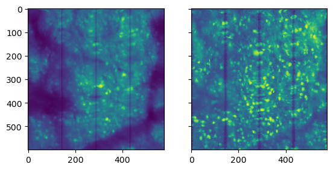
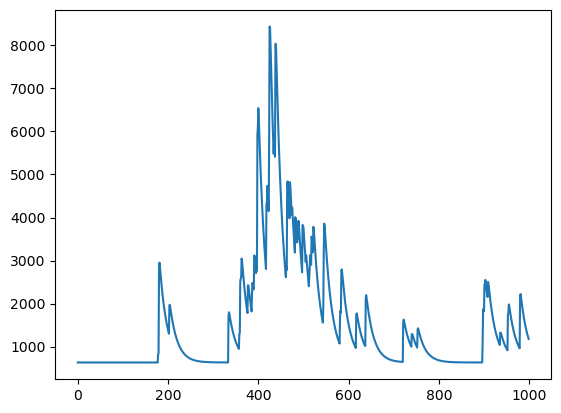

Segmentation#
Extract neuronal locations and planar time-traces.
Apply the constrained nonnegative matrix factorization (CNMF) source separation algorithm to extract initial estimates of neuronal spatial footprints and calcium traces.
Apply quality control metrics to evaluate the initial estimates, and narrow down to the final set of estimates.
Caiman docs on component eval#
https://caiman.readthedocs.io/en/latest/Getting_Started.html#component-evaluation
The quality of detected components is evaluated with three parameters:
Spatial footprint consistency (rval): The spatial footprint of the component is compared with the frames where this component is active.
Other component’s signals are subtracted from these frames, and the resulting raw data is correlated against the spatial component.
This ensures that the raw data at the spatial footprint aligns with the extracted trace.
Trace signal-noise-ratio SNR: Peak SNR is calculated from strong calcium transients and the noise estimate.
CNN-based classifier cnn: The shape of components is evaluated by a 4-layered convolutional neural network trained on a manually annotated dataset.
The CNN assigns a value of 0-1 to each component depending on its resemblance to a neuronal soma.
Each parameter has a low threshold:
(rval_lowest (default -1), SNR_lowest (default 0.5), cnn_lowest (default 0.1)) and high threshold:
(rval_thr (default 0.8), min_SNR (default 2.5), min_cnn_thr (default 0.9)) A component has to exceed ALL low thresholds as well as ONE high threshold to be accepted.
import os
from pathlib import Path
import logging
import mesmerize_core as mc
from mesmerize_core.caiman_extensions.cnmf import cnmf_cache
from caiman.source_extraction.cnmf import cnmf, params
from caiman.motion_correction import high_pass_filter_space
from caiman.summary_images import correlation_pnr
import matplotlib.pyplot as plt
import pandas as pd
import numpy as np
import zarr
from ipywidgets import IntSlider, VBox
from sidecar import Sidecar
try:
import cv2
cv2.setNumThreads(0)
except():
pass
if os.name == "nt":
# disable the cache on windows, this will be automatic in a future version
cnmf_cache.set_maxsize(0)
pd.options.display.max_colwidth = 120
# Unneeded in newer versions of mesmerize-core
os.environ['CONDA_PYTHON_EXE'] = "/home/flynn/miniforge3/bin/python"
os.environ['CONDA_PREFIX_1'] = "lcp"
logger = logging.getLogger("caiman")
logger.setLevel(logging.DEBUG)
handler = logging.StreamHandler()
log_format = logging.Formatter("%(relativeCreated)12d [%(filename)s:%(funcName)10s():%(lineno)s] [%(process)d] %(message)s")
handler.setFormatter(log_format)
logger.addHandler(handler)
logging.getLogger("caiman").setLevel(logging.WARNING)
2024-12-02 09:33:49.504908: I tensorflow/core/util/port.cc:113] oneDNN custom operations are on. You may see slightly different numerical results due to floating-point round-off errors from different computation orders. To turn them off, set the environment variable `TF_ENABLE_ONEDNN_OPTS=0`.
2024-12-02 09:33:49.523998: I tensorflow/core/platform/cpu_feature_guard.cc:182] This TensorFlow binary is optimized to use available CPU instructions in performance-critical operations.
To enable the following instructions: SSE4.1 SSE4.2 AVX AVX2 AVX_VNNI FMA, in other operations, rebuild TensorFlow with the appropriate compiler flags.
Data path setup#
Data setup is similar to motion_correction notebook.
You can make a new batch named something like cnmf.batch just like you did for registration.
However, you will want to also load the previous registration batch to use as input to df.caiman.add_item().
Additionally, you will also want the path to the input file so we can read the metadata from the raw file.
Here, to keep data organized, we will:
define our previous analaysis path as
mcorr_batch_pathcreate a new ‘cnmf.pickle` to save our cnmf results.
parent_path = Path().home() / "caiman_data" / "out"
mcorr_batch_path = parent_path / 'batch.pickle'
mc.set_parent_raw_data_path(str(parent_path))
df_mcorr = mc.load_batch(mcorr_batch_path)
df_mcorr
| algo | item_name | input_movie_path | params | outputs | added_time | ran_time | algo_duration | comments | uuid | |
|---|---|---|---|---|---|---|---|---|---|---|
| 0 | mcorr | mcorr | plane_1.tiff | {'main': {'dxy': (1.04, 1.0), 'fr': 9.60806, 'max_shifts': (2, 2), 'strides': (12, 12), 'overlaps': (6, 6), 'max_dev... | {'mean-projection-path': a8f0f15d-d2a7-4ab8-92d1-9dc05ebcbc89/a8f0f15d-d2a7-4ab8-92d1-9dc05ebcbc89_mean_projection.n... | 2024-12-01T18:10:05 | 2024-12-01T18:13:10 | 170.19 sec | None | a8f0f15d-d2a7-4ab8-92d1-9dc05ebcbc89 |
| 1 | mcorr | plane_0 | plane_21.tiff | {'main': {'dxy': (1.04, 1.0), 'fr': 9.60806, 'max_shifts': (2, 2), 'strides': (12, 12), 'overlaps': (6, 6), 'max_dev... | {'mean-projection-path': 2918ff63-f204-4334-8837-ea172af89e39/2918ff63-f204-4334-8837-ea172af89e39_mean_projection.n... | 2024-12-01T18:48:52 | 2024-12-01T18:52:57 | 172.63 sec | None | 2918ff63-f204-4334-8837-ea172af89e39 |
| 2 | mcorr | plane_2 | plane_16.tiff | {'main': {'dxy': (1.04, 1.0), 'fr': 9.60806, 'max_shifts': (2, 2), 'strides': (12, 12), 'overlaps': (6, 6), 'max_dev... | {'mean-projection-path': 245bb955-feb9-4245-86bf-dd6ec1c79e95/245bb955-feb9-4245-86bf-dd6ec1c79e95_mean_projection.n... | 2024-12-01T18:48:52 | 2024-12-01T18:55:58 | 176.06 sec | None | 245bb955-feb9-4245-86bf-dd6ec1c79e95 |
Item name cleanup
# fix our item names. Not needed but keeps things organized
df_mcorr.iloc[0].item_name = 'plane_1'
df_mcorr.iloc[1].item_name = 'plane_21'
df_mcorr.iloc[2].item_name = 'plane_16'
df_mcorr
| algo | item_name | input_movie_path | params | outputs | added_time | ran_time | algo_duration | comments | uuid | |
|---|---|---|---|---|---|---|---|---|---|---|
| 0 | mcorr | plane_1 | plane_1.tiff | {'main': {'dxy': (1.04, 1.0), 'fr': 9.60806, 'max_shifts': (2, 2), 'strides': (12, 12), 'overlaps': (6, 6), 'max_dev... | {'mean-projection-path': a8f0f15d-d2a7-4ab8-92d1-9dc05ebcbc89/a8f0f15d-d2a7-4ab8-92d1-9dc05ebcbc89_mean_projection.n... | 2024-12-01T18:10:05 | 2024-12-01T18:13:10 | 170.19 sec | None | a8f0f15d-d2a7-4ab8-92d1-9dc05ebcbc89 |
| 1 | mcorr | plane_21 | plane_21.tiff | {'main': {'dxy': (1.04, 1.0), 'fr': 9.60806, 'max_shifts': (2, 2), 'strides': (12, 12), 'overlaps': (6, 6), 'max_dev... | {'mean-projection-path': 2918ff63-f204-4334-8837-ea172af89e39/2918ff63-f204-4334-8837-ea172af89e39_mean_projection.n... | 2024-12-01T18:48:52 | 2024-12-01T18:52:57 | 172.63 sec | None | 2918ff63-f204-4334-8837-ea172af89e39 |
| 2 | mcorr | plane_16 | plane_16.tiff | {'main': {'dxy': (1.04, 1.0), 'fr': 9.60806, 'max_shifts': (2, 2), 'strides': (12, 12), 'overlaps': (6, 6), 'max_dev... | {'mean-projection-path': 245bb955-feb9-4245-86bf-dd6ec1c79e95/245bb955-feb9-4245-86bf-dd6ec1c79e95_mean_projection.n... | 2024-12-01T18:48:52 | 2024-12-01T18:55:58 | 176.06 sec | None | 245bb955-feb9-4245-86bf-dd6ec1c79e95 |
Now a new batch set to store cnmf.
cnmf_batch_path = parent_path / 'cnmf.pickle'
# I like leaving `remove_existing` to False for safety, and if you want to "start over", just create a new batch by switching `remove_existing` to True.
df = mc.create_batch(cnmf_batch_path, remove_existing=False)
df
| algo | item_name | input_movie_path | params | outputs | added_time | ran_time | algo_duration | comments | uuid |
|---|
get_input_movie_path() allows us to easily get filepaths to our raw files
from lbm_caiman_python import get_metadata
tiff_files = [df_mcorr.iloc[i].caiman.get_input_movie_path() for i in df_mcorr.index]
metadata = [get_metadata(file) for file in tiff_files]
print(metadata[0]['pixel_resolution'])
print(metadata[1]['pixel_resolution'])
print(metadata[2]['pixel_resolution'])
[1.04, 1.0]
[1.04, 1.0]
[1.04, 1.0]
CNMF#
Run the CaImAn CNMF algorithm using the mcorr output obtained in the last processing step.
Initial parameters#
In general in Caiman, estimators are first initialized with a set of parameters, and then they are fit against actual data in a separate step.
In this section, we’ll define a parameters object that will subsequently be used to initialize our different estimators.
Parameter |
Description |
Default/Typical Value |
|---|---|---|
|
Length of a typical transient in seconds. Approximation of the time scale for significant shifts in calcium signal. Defaults to |
0.4 (fast indicators) |
|
Order of the autoregressive model. Use |
1 (slow), 2 (visible rise time) |
|
Number of global background components. Defaults to |
2 |
|
Merging threshold for components after initialization. Components correlated above this threshold are merged, useful for splitting neurons during initialization. |
Typically between 0.7 and 0.9 |
|
Half-size of patches in pixels. Should be at least 3–4 times larger than neuron size to capture the neuron and local background. Larger patches reduce parallelization. |
3–4 × expected neuron size |
|
Overlap between patches in pixels. Typically set to neuron diameter. Larger values increase computational load but improve reconstruction/denoising. |
Neuron diameter (~10–20 pixels) |
|
Expected number of components per patch. Adjust based on patch size ( |
Varies based on data |
|
Expected half-size of neurons in pixels |
Typically matches neuron half-size |
|
Initialization method. Depends on the recording method: use |
|
|
Spatial and temporal subsampling during initialization. Defaults to |
1 (no compression), 2+ (for resource saving) |
decay_time: Length of a typical transient in seconds. decay_time is an approximation of the time scale over which to expect a significant shift in the calcium signal during a transient. It defaults to 0.4, which is appropriate for fast indicators (GCaMP6f), slow indicators might use 1 or even more. However, decay_time does not have to precisely fit the data, approximations are enough.
Protein |
Max dF/F |
Half-rise time (ms) |
Time to peak (ms) |
Half-decay time (ms) |
|---|---|---|---|---|
jGCaMP7f (control) |
0.21±0.1 |
24.8±6.6 |
99.5±30.2 |
181.9±76.0 |
jGCaMP8f |
0.41±0.12 |
7.1±0.74 |
24.8±6.1 |
67.4±11.2 |
jGCaMP8m |
0.76±0.22 |
7.1±0.61 |
29.0±11.2 |
118.3±13.2 |
jGCaMP8s |
1.11±0.22 |
10.1±0.86 |
57.0±12.9 |
306.7±32.2 |
jGCaMP8.712* |
0.66±0.18 |
10.9±1.24 |
41.6±8.1 |
94.8±13.3 |
A note on strides and overlaps#
For registration, the strides and overlaps have influence on the quality of the results as each patch is processed individually and merged.
For segmentation, the equivalent stride and rf parameters (yes, confusing) only influence the processing time and not the qualty of the result.
gSig is arguably the most influencial parameter, it should be the size of your neurons in um * 2.
if your typical neuron is
14um,gSigshould be around 6-10.
gSig = 7 # Set this to half the size of your neuron, so 7 um for an approximate neuron size of 12-15um. See motion_correction.ipynb for a visualization helping you determine this value.
# parameters for component evaluation
min_SNR = 1.4 # signal to noise ratio for accepting a component
rval_thr = 0.80 # space correlation threshold for accepting a component
params_cnmf =\
{
"main":
{
'fr': metadata[0]['frame_rate'],
'use_cnn': False, # Will error if you set this to True without downloading the CNN model via caimanmanager install
'dxy': metadata[0]['pixel_resolution'],
'method_init': 'greedy_roi', # could also try 'corr_pnr'
'K': 50,
'gSig': (gSig, gSig),
'gSiz': (4 * gSig + 1, 4 * gSig + 1),
'merge_thr': 0.7,
'p': 2,
'tsub': 1,
'ssub': 1,
'rf': 30,
'stride': 12,
'method_deconvolution': 'oasis', # could use 'cvxpy' alternatively
'low_rank_background': None,
'update_background_components': True, # defaults true, sometimes setting to False improve the results
# 'ring_size_factor': 1.4, # if attempting CNMFE, this is the radius of ring (*gSig) for computing background during corr_pnr
'del_duplicates': True, # whether to remove duplicates from initialization
'min_SNR': min_SNR,
'rval_thr': rval_thr,
}
}
min_SNR and rval_thr can be tuned with mesmerize-viz after processing is complete.
Run CNMF#
The API is identical to running mcorr.
You can provide the mcorr item row to input_movie_path and it will resolve the path of the input movie from the entry in the DataFrame.
df = df.caiman.reload_from_disk()
df.caiman.add_item(
algo='cnmf',
input_movie_path=df_mcorr.iloc[0], # our registration results row
params=params_cnmf,
item_name=f'{df_mcorr.iloc[0].item_name}_cnmf',
)
df
| algo | item_name | input_movie_path | params | outputs | added_time | ran_time | algo_duration | comments | uuid | |
|---|---|---|---|---|---|---|---|---|---|---|
| 0 | cnmf | plane_1_cnmf | a8f0f15d-d2a7-4ab8-92d1-9dc05ebcbc89/a8f0f15d-d2a7-4ab8-92d1-9dc05ebcbc89-plane_1_els__d1_600_d2_576_d3_1_order_F_fr... | {'main': {'fr': 9.60806, 'use_cnn': False, 'dxy': (1.04, 1.0), 'method_init': 'greedy_roi', 'K': 50, 'gSig': (7, 7),... | None | 2024-12-02T09:41:03 | None | None | None | 55ee2c5b-cbc8-4fe3-b816-628fca029fba |
df.iloc[-1].caiman.run()
************************************************************************
Starting CNMF item:
algo cnmf
item_name plane_1_cnmf
input_movie_path a8f0f15d-d2a7-4ab8-92d1-9dc05ebcbc89/a8f0f15d-...
params {'main': {'fr': 9.60806, 'use_cnn': False, 'dx...
outputs None
added_time 2024-12-02T09:41:03
ran_time None
algo_duration None
comments None
uuid 55ee2c5b-cbc8-4fe3-b816-628fca029fba
Name: 0, dtype: object
With params:{'main': {'fr': 9.60806, 'use_cnn': False, 'dxy': (1.04, 1.0), 'method_init': 'greedy_roi', 'K': 50, 'gSig': (7, 7), 'gSiz': (29, 29), 'merge_thr': 0.7, 'p': 2, 'tsub': 1, 'ssub': 1, 'rf': 30, 'stride': 12, 'method_deconvolution': 'oasis', 'low_rank_background': None, 'update_background_components': True, 'del_duplicates': True, 'min_SNR': 1.4, 'rval_thr': 0.8}}
The local backend is an alias for the multiprocessing backend, and the alias may be removed in some future version of Caiman
In setting CNMFParams, non-pathed parameters were used; this is deprecated. In some future version of Caiman, allow_legacy will default to False (and eventually will be removed)
making memmap
The local backend is an alias for the multiprocessing backend, and the alias may be removed in some future version of Caiman
Component 0 is only active jointly with neighboring components. Space correlation calculation might be unreliable.
Component 12 is only active jointly with neighboring components. Space correlation calculation might be unreliable.
Component 21 is only active jointly with neighboring components. Space correlation calculation might be unreliable.
Component 17 is only active jointly with neighboring components. Space correlation calculation might be unreliable.
Component 25 is only active jointly with neighboring components. Space correlation calculation might be unreliable.
Component 19 is only active jointly with neighboring components. Space correlation calculation might be unreliable.
Component 21 is only active jointly with neighboring components. Space correlation calculation might be unreliable.
Component 22 is only active jointly with neighboring components. Space correlation calculation might be unreliable.
Component 32 is only active jointly with neighboring components. Space correlation calculation might be unreliable.
Component 25 is only active jointly with neighboring components. Space correlation calculation might be unreliable.
Component 13 is only active jointly with neighboring components. Space correlation calculation might be unreliable.
Component 21 is only active jointly with neighboring components. Space correlation calculation might be unreliable.
Component 33 is only active jointly with neighboring components. Space correlation calculation might be unreliable.
Component 40 is only active jointly with neighboring components. Space correlation calculation might be unreliable.
Component 19 is only active jointly with neighboring components. Space correlation calculation might be unreliable.
Component 27 is only active jointly with neighboring components. Space correlation calculation might be unreliable.
Component 37 is only active jointly with neighboring components. Space correlation calculation might be unreliable.
Component 41 is only active jointly with neighboring components. Space correlation calculation might be unreliable.
Component 45 is only active jointly with neighboring components. Space correlation calculation might be unreliable.
Component 3 is only active jointly with neighboring components. Space correlation calculation might be unreliable.
Component 12 is only active jointly with neighboring components. Space correlation calculation might be unreliable.
Component 18 is only active jointly with neighboring components. Space correlation calculation might be unreliable.
Component 11 is only active jointly with neighboring components. Space correlation calculation might be unreliable.
Component 14 is only active jointly with neighboring components. Space correlation calculation might be unreliable.
Component 32 is only active jointly with neighboring components. Space correlation calculation might be unreliable.
Component 34 is only active jointly with neighboring components. Space correlation calculation might be unreliable.
Component 19 is only active jointly with neighboring components. Space correlation calculation might be unreliable.
Component 46 is only active jointly with neighboring components. Space correlation calculation might be unreliable.
Component 3 is only active jointly with neighboring components. Space correlation calculation might be unreliable.
Component 4 is only active jointly with neighboring components. Space correlation calculation might be unreliable.
Component 24 is only active jointly with neighboring components. Space correlation calculation might be unreliable.
Component 33 is only active jointly with neighboring components. Space correlation calculation might be unreliable.
Component 19 is only active jointly with neighboring components. Space correlation calculation might be unreliable.
Component 37 is only active jointly with neighboring components. Space correlation calculation might be unreliable.
Component 26 is only active jointly with neighboring components. Space correlation calculation might be unreliable.
Component 22 is only active jointly with neighboring components. Space correlation calculation might be unreliable.
Component 2 is only active jointly with neighboring components. Space correlation calculation might be unreliable.
Component 6 is only active jointly with neighboring components. Space correlation calculation might be unreliable.
Component 21 is only active jointly with neighboring components. Space correlation calculation might be unreliable.
Component 25 is only active jointly with neighboring components. Space correlation calculation might be unreliable.
Component 28 is only active jointly with neighboring components. Space correlation calculation might be unreliable.
Component 32 is only active jointly with neighboring components. Space correlation calculation might be unreliable.
Component 20 is only active jointly with neighboring components. Space correlation calculation might be unreliable.
Component 31 is only active jointly with neighboring components. Space correlation calculation might be unreliable.
Component 22 is only active jointly with neighboring components. Space correlation calculation might be unreliable.
Component 23 is only active jointly with neighboring components. Space correlation calculation might be unreliable.
Component 34 is only active jointly with neighboring components. Space correlation calculation might be unreliable.
Component 18 is only active jointly with neighboring components. Space correlation calculation might be unreliable.
Component 21 is only active jointly with neighboring components. Space correlation calculation might be unreliable.
Component 25 is only active jointly with neighboring components. Space correlation calculation might be unreliable.
Component 39 is only active jointly with neighboring components. Space correlation calculation might be unreliable.
Component 46 is only active jointly with neighboring components. Space correlation calculation might be unreliable.
Component 26 is only active jointly with neighboring components. Space correlation calculation might be unreliable.
Component 46 is only active jointly with neighboring components. Space correlation calculation might be unreliable.
Component 2 is only active jointly with neighboring components. Space correlation calculation might be unreliable.
Component 3 is only active jointly with neighboring components. Space correlation calculation might be unreliable.
Component 8 is only active jointly with neighboring components. Space correlation calculation might be unreliable.
Component 18 is only active jointly with neighboring components. Space correlation calculation might be unreliable.
Component 10 is only active jointly with neighboring components. Space correlation calculation might be unreliable.
Component 30 is only active jointly with neighboring components. Space correlation calculation might be unreliable.
Component 19 is only active jointly with neighboring components. Space correlation calculation might be unreliable.
Component 31 is only active jointly with neighboring components. Space correlation calculation might be unreliable.
Component 33 is only active jointly with neighboring components. Space correlation calculation might be unreliable.
Component 13 is only active jointly with neighboring components. Space correlation calculation might be unreliable.
Component 27 is only active jointly with neighboring components. Space correlation calculation might be unreliable.
Component 34 is only active jointly with neighboring components. Space correlation calculation might be unreliable.
Component 29 is only active jointly with neighboring components. Space correlation calculation might be unreliable.
Component 5 is only active jointly with neighboring components. Space correlation calculation might be unreliable.
Component 9 is only active jointly with neighboring components. Space correlation calculation might be unreliable.
Component 10 is only active jointly with neighboring components. Space correlation calculation might be unreliable.
Component 25 is only active jointly with neighboring components. Space correlation calculation might be unreliable.
Component 27 is only active jointly with neighboring components. Space correlation calculation might be unreliable.
Component 26 is only active jointly with neighboring components. Space correlation calculation might be unreliable.
Component 4 is only active jointly with neighboring components. Space correlation calculation might be unreliable.
Component 26 is only active jointly with neighboring components. Space correlation calculation might be unreliable.
Component 35 is only active jointly with neighboring components. Space correlation calculation might be unreliable.
Component 38 is only active jointly with neighboring components. Space correlation calculation might be unreliable.
Component 23 is only active jointly with neighboring components. Space correlation calculation might be unreliable.
Component 24 is only active jointly with neighboring components. Space correlation calculation might be unreliable.
Component 31 is only active jointly with neighboring components. Space correlation calculation might be unreliable.
Component 10 is only active jointly with neighboring components. Space correlation calculation might be unreliable.
Component 15 is only active jointly with neighboring components. Space correlation calculation might be unreliable.
Component 35 is only active jointly with neighboring components. Space correlation calculation might be unreliable.
Component 37 is only active jointly with neighboring components. Space correlation calculation might be unreliable.
Component 21 is only active jointly with neighboring components. Space correlation calculation might be unreliable.
Component 41 is only active jointly with neighboring components. Space correlation calculation might be unreliable.
Component 1 is only active jointly with neighboring components. Space correlation calculation might be unreliable.
Component 11 is only active jointly with neighboring components. Space correlation calculation might be unreliable.
Component 16 is only active jointly with neighboring components. Space correlation calculation might be unreliable.
Component 17 is only active jointly with neighboring components. Space correlation calculation might be unreliable.
Component 20 is only active jointly with neighboring components. Space correlation calculation might be unreliable.
Component 28 is only active jointly with neighboring components. Space correlation calculation might be unreliable.
Component 11 is only active jointly with neighboring components. Space correlation calculation might be unreliable.
Component 12 is only active jointly with neighboring components. Space correlation calculation might be unreliable.
Component 20 is only active jointly with neighboring components. Space correlation calculation might be unreliable.
Component 32 is only active jointly with neighboring components. Space correlation calculation might be unreliable.
Component 5 is only active jointly with neighboring components. Space correlation calculation might be unreliable.
Component 11 is only active jointly with neighboring components. Space correlation calculation might be unreliable.
Component 28 is only active jointly with neighboring components. Space correlation calculation might be unreliable.
Component 22 is only active jointly with neighboring components. Space correlation calculation might be unreliable.
Component 36 is only active jointly with neighboring components. Space correlation calculation might be unreliable.
Component 42 is only active jointly with neighboring components. Space correlation calculation might be unreliable.
Component 43 is only active jointly with neighboring components. Space correlation calculation might be unreliable.
Component 44 is only active jointly with neighboring components. Space correlation calculation might be unreliable.
Component 47 is only active jointly with neighboring components. Space correlation calculation might be unreliable.
Component 37 is only active jointly with neighboring components. Space correlation calculation might be unreliable.
Component 20 is only active jointly with neighboring components. Space correlation calculation might be unreliable.
Component 9 is only active jointly with neighboring components. Space correlation calculation might be unreliable.
Component 11 is only active jointly with neighboring components. Space correlation calculation might be unreliable.
Component 19 is only active jointly with neighboring components. Space correlation calculation might be unreliable.
Component 23 is only active jointly with neighboring components. Space correlation calculation might be unreliable.
Component 35 is only active jointly with neighboring components. Space correlation calculation might be unreliable.
Component 1 is only active jointly with neighboring components. Space correlation calculation might be unreliable.
Component 11 is only active jointly with neighboring components. Space correlation calculation might be unreliable.
Component 19 is only active jointly with neighboring components. Space correlation calculation might be unreliable.
Component 36 is only active jointly with neighboring components. Space correlation calculation might be unreliable.
Component 39 is only active jointly with neighboring components. Space correlation calculation might be unreliable.
Component 12 is only active jointly with neighboring components. Space correlation calculation might be unreliable.
Component 14 is only active jointly with neighboring components. Space correlation calculation might be unreliable.
Component 12 is only active jointly with neighboring components. Space correlation calculation might be unreliable.
Component 25 is only active jointly with neighboring components. Space correlation calculation might be unreliable.
Component 0 is only active jointly with neighboring components. Space correlation calculation might be unreliable.
Component 11 is only active jointly with neighboring components. Space correlation calculation might be unreliable.
Component 17 is only active jointly with neighboring components. Space correlation calculation might be unreliable.
Component 25 is only active jointly with neighboring components. Space correlation calculation might be unreliable.
Component 26 is only active jointly with neighboring components. Space correlation calculation might be unreliable.
Component 3 is only active jointly with neighboring components. Space correlation calculation might be unreliable.
Component 12 is only active jointly with neighboring components. Space correlation calculation might be unreliable.
Component 13 is only active jointly with neighboring components. Space correlation calculation might be unreliable.
Component 23 is only active jointly with neighboring components. Space correlation calculation might be unreliable.
Component 38 is only active jointly with neighboring components. Space correlation calculation might be unreliable.
Component 16 is only active jointly with neighboring components. Space correlation calculation might be unreliable.
Component 16 is only active jointly with neighboring components. Space correlation calculation might be unreliable.
Component 22 is only active jointly with neighboring components. Space correlation calculation might be unreliable.
Component 17 is only active jointly with neighboring components. Space correlation calculation might be unreliable.
Component 20 is only active jointly with neighboring components. Space correlation calculation might be unreliable.
Component 21 is only active jointly with neighboring components. Space correlation calculation might be unreliable.
Component 23 is only active jointly with neighboring components. Space correlation calculation might be unreliable.
Component 26 is only active jointly with neighboring components. Space correlation calculation might be unreliable.
Component 30 is only active jointly with neighboring components. Space correlation calculation might be unreliable.
Component 4 is only active jointly with neighboring components. Space correlation calculation might be unreliable.
Component 32 is only active jointly with neighboring components. Space correlation calculation might be unreliable.
Component 34 is only active jointly with neighboring components. Space correlation calculation might be unreliable.
Component 16 is only active jointly with neighboring components. Space correlation calculation might be unreliable.
Component 20 is only active jointly with neighboring components. Space correlation calculation might be unreliable.
performing CNMF
fitting images
performing eval
<Popen: returncode: 0 args: '/home/flynn/caiman_data/out/55ee2c5b-cbc8-4fe3-...>
Checking for an errors#
After a batch run, check the results to make sure the outputs do not contain a “traceback” error.
An error-free processing run will yield “None” in the cell below. Otherwise, an error will be printed.
import pprint
df = df.caiman.reload_from_disk()
pprint.pprint(df.iloc[-1].outputs["traceback"])
None
df = df.caiman.reload_from_disk()
df
| algo | item_name | input_movie_path | params | outputs | added_time | ran_time | algo_duration | comments | uuid | |
|---|---|---|---|---|---|---|---|---|---|---|
| 0 | cnmf | plane_1_cnmf | a8f0f15d-d2a7-4ab8-92d1-9dc05ebcbc89/a8f0f15d-d2a7-4ab8-92d1-9dc05ebcbc89-plane_1_els__d1_600_d2_576_d3_1_order_F_fr... | {'main': {'fr': 9.60806, 'use_cnn': False, 'dxy': (1.04, 1.0), 'method_init': 'greedy_roi', 'K': 50, 'gSig': (7, 7),... | {'mean-projection-path': 55ee2c5b-cbc8-4fe3-b816-628fca029fba/55ee2c5b-cbc8-4fe3-b816-628fca029fba_mean_projection.n... | 2024-12-02T09:41:03 | 2024-12-02T09:51:04 | 582.92 sec | None | 55ee2c5b-cbc8-4fe3-b816-628fca029fba |
CNMF outputs#
Similar to mcorr, you can use the mesmerize-core API to fetch the outputs.
API reference for mesmerize-CNMF API reference for caiman-CNMF
CNMF Object#
mcorr_movie = df_mcorr.iloc[0].mcorr.get_output()
cnmf_model = df.iloc[0].cnmf.get_output()
num_traces = cnmf_model.estimates.C
print(f'Number of traces: {num_traces.shape[0]}')
Number of traces: 4794
corr, pnr = correlation_pnr(mcorr_movie[::2], gSig=gSig, swap_dim=False)
Interactive Parameter Exploration#
from ipywidgets import Tab, Text, Button, VBox, interact_manual, interactive
@interact_manual(parent_path=str(parent_path), batch_path=str(cnmf_batch_path))
def start_widget(parent_path, batch_path):
mc.set_parent_raw_data_path(parent_path)
df = mc.load_batch(batch_path)
tab = Tab()
# mcorr_container = df.mcorr.viz(start_index=0)
cnmf_container = df.cnmf.viz(start_index=19)
tab.children = [cnmf_container.show()]
tab.titles = ["cnmf"]
display(tab)
Exploring spatial components (neuron masks) and temporal components (traces)#
index = -1 # the last item added
rcb = df.iloc[index].cnmf.get_rcb()
residuals = df.iloc[index].cnmf.get_residuals()
input_movie = df.iloc[index].caiman.get_input_movie()
# temporal components
temporal = df.iloc[index].cnmf.get_temporal()
temporal_good = df.iloc[index].cnmf.get_temporal("good")
temporal_bad = df.iloc[index].cnmf.get_temporal("bad")
temporal_with_residuals = df.iloc[index].cnmf.get_temporal(add_residuals=True)
correlation_image = df.iloc[-1].caiman.get_corr_image()
components_good = df.iloc[-1].cnmf.get_good_components()
components_bad = df.iloc[-1].cnmf.get_bad_components()
mean_img = df.iloc[-1].caiman.get_projection('mean')
std_img = df.iloc[-1].caiman.get_projection('std')
masks = df.iloc[-1].cnmf.get_masks()
print(f'Temporal Components (good/bad): {temporal_good.shape} / {temporal_bad.shape}')
print(f'Spatial Components (good/bad): {components_good.shape} / {components_bad.shape}')
Temporal Components (good/bad): (2111, 1000) / (2683, 1000)
Spatial Components (good/bad): (2111,) / (2683,)
good_masks = df.iloc[-1].cnmf.get_masks('good')
bad_masks = df.iloc[-1].cnmf.get_masks('bad')
fig, ax = plt.subplots(1,2, sharey=True)
ax[0].imshow(mean_img)
ax[1].imshow(correlation_image)
<matplotlib.image.AxesImage at 0x716c12144b90>

cnmf_model.params
CNMFParams:
data:
{'caiman_version': '1.11.3',
'decay_time': 0.4,
'dims': None,
'dxy': (1.04, 1.0),
'fnames': None,
'fr': 9.60806,
'last_commit': 'FILE-1732901206',
'var_name_hdf5': 'mov'}
init:
{'K': 50,
'SC_kernel': 'heat',
'SC_nnn': 20,
'SC_normalize': True,
'SC_sigma': 1,
'SC_thr': 0,
'SC_use_NN': False,
'alpha_snmf': 0.5,
'center_psf': False,
'gSig': array([7, 7]),
'gSiz': array([29, 29]),
'init_iter': 2,
'kernel': None,
'lambda_gnmf': 1,
'maxIter': 5,
'max_iter_snmf': 500,
'method_init': 'greedy_roi',
'min_corr': 0.85,
'min_pnr': 20,
'nIter': 5,
'nb': 1,
'normalize_init': True,
'options_local_NMF': None,
'perc_baseline_snmf': 20,
'ring_size_factor': 1.5,
'rolling_length': 100,
'rolling_sum': True,
'seed_method': 'auto',
'sigma_smooth_snmf': (0.5, 0.5, 0.5),
'ssub': 1,
'ssub_B': 2,
'tsub': 1}
merging:
{'do_merge': True, 'merge_parallel': False, 'merge_thr': 0.7}
motion:
{'border_nan': 'copy',
'gSig_filt': None,
'indices': array([b'slice(None, None, None)', b'slice(None, None, None)'],
dtype='|S32'),
'is3D': False,
'max_deviation_rigid': 3,
'max_shifts': (6, 6),
'min_mov': None,
'niter_rig': 1,
'nonneg_movie': True,
'num_frames_split': 80,
'num_splits_to_process_els': None,
'num_splits_to_process_rig': None,
'overlaps': (32, 32),
'pw_rigid': False,
'shifts_opencv': True,
'splits_els': 14,
'splits_rig': 14,
'strides': (96, 96),
'upsample_factor_grid': 4,
'use_cuda': False}
online:
{'N_samples_exceptionality': 4,
'W_update_factor': 1,
'batch_update_suff_stat': False,
'dist_shape_update': False,
'ds_factor': 1,
'epochs': 1,
'expected_comps': 500,
'full_XXt': False,
'init_batch': 1000,
'init_method': 'bare',
'iters_shape': 5,
'max_comp_update_shape': inf,
'max_num_added': 5,
'max_shifts_online': 10,
'min_SNR': 1.4,
'min_num_trial': 5,
'minibatch_shape': 100,
'minibatch_suff_stat': 5,
'motion_correct': True,
'movie_name_online': 'online_movie.mp4',
'n_refit': 0,
'normalize': False,
'num_times_comp_updated': inf,
'opencv_codec': 'H264',
'path_to_model': '/home/flynn/caiman_data/model/cnn_model_online.h5',
'ring_CNN': False,
'rval_thr': 0.8,
'save_online_movie': False,
'show_movie': False,
'simultaneously': False,
'sniper_mode': False,
'stop_detection': False,
'test_both': False,
'thresh_CNN_noisy': 0.5,
'thresh_fitness_delta': -50,
'thresh_fitness_raw': -10.065259411953317,
'thresh_overlap': 0.5,
'update_freq': 200,
'update_num_comps': True,
'use_corr_img': False,
'use_dense': True,
'use_peak_max': True}
patch:
{'border_pix': 0,
'del_duplicates': True,
'in_memory': True,
'low_rank_background': None,
'memory_fact': 1,
'n_processes': 15,
'nb_patch': 1,
'only_init': True,
'p_patch': 0,
'p_ssub': 2,
'p_tsub': 2,
'remove_very_bad_comps': False,
'rf': 30,
'skip_refinement': False,
'stride': 12}
preprocess:
{'check_nan': True,
'compute_g': False,
'include_noise': False,
'lags': 5,
'max_num_samples_fft': 3072,
'n_pixels_per_process': 23040,
'noise_method': 'mean',
'noise_range': array([0.25, 0.5 ]),
'p': 2,
'pixels': None,
'sn': None}
ring_CNN:
{'loss_fn': 'pct',
'lr': 0.001,
'lr_scheduler': None,
'max_epochs': 100,
'n_channels': 2,
'path_to_model': None,
'patience': 3,
'pct': 0.01,
'remove_activity': False,
'reuse_model': False,
'use_add': False,
'use_bias': False,
'width': 5}
quality:
{'SNR_lowest': 0.5,
'cnn_lowest': 0.1,
'gSig_range': None,
'max_ecc': 3,
'min_SNR': 1.4,
'min_cnn_thr': 0.9,
'rval_lowest': -1,
'rval_thr': 0.8,
'use_cnn': False,
'use_ecc': False}
spatial:
{'dist': 3,
'expandCore': array([[0, 0, 1, 0, 0],
[0, 1, 1, 1, 0],
[1, 1, 1, 1, 1],
[0, 1, 1, 1, 0],
[0, 0, 1, 0, 0]]),
'extract_cc': True,
'maxthr': 0.1,
'medw': None,
'method_exp': 'dilate',
'method_ls': 'lasso_lars',
'n_pixels_per_process': 23040,
'nb': 1,
'normalize_yyt_one': True,
'nrgthr': 0.9999,
'num_blocks_per_run_spat': 20,
'se': None,
'ss': None,
'thr_method': 'nrg',
'update_background_components': True}
temporal:
{'ITER': 2,
'bas_nonneg': False,
'block_size_temp': 5000,
'fudge_factor': 0.96,
'lags': 5,
'method_deconvolution': 'oasis',
'nb': 1,
'noise_method': 'mean',
'noise_range': array([0.25, 0.5 ]),
'num_blocks_per_run_temp': 20,
'optimize_g': False,
'p': 2,
's_min': None,
'solvers': array([b'ECOS', b'SCS'], dtype='|S4'),
'verbosity': False}
# dim order: txy[,z]
plt.plot(cnmf_model.estimates.C[0,:])
plt.show()

Feed a list of indices to get back specific traces of interest#
df.iloc[-1].cnmf.get_temporal(np.array([1, 5, 9]))
array([[809.30130583, 809.30130583, 809.30130583, ..., 955.33151105,
945.99438276, 937.25426771],
[376.86927229, 376.86927229, 376.86927229, ..., 466.59936288,
447.63001607, 432.66967922],
[548.78006071, 550.66787934, 862.77810232, ..., 510.56491452,
510.55875568, 510.55318154]])
Contours allow you to plot the neurons on top of an image#
Returns: (list of np.ndarray of contour coordinates, list of center of mass)
contours = df.iloc[-1].cnmf.get_contours()
len(contours)
2
# get_contours() also takes arguments
contours_good = df.iloc[index].cnmf.get_contours("good")
len(contours_good[0]) # number of contours
viz_cnmf = df.cnmf.viz()
viz_cnmf.show()
swap_dim
# get the first contour using swap_dim=True (default)
swap_dim_true = df.iloc[index].cnmf.get_contours()[0][0]
# get the first contour with swap_dim=False
swap_dim_false = df.iloc[index].cnmf.get_contours(swap_dim=False)[0][0]
plt.plot(
swap_dim_true[:, 0],
swap_dim_true[:, 1],
label="swap_dim=True"
)
plt.plot(
swap_dim_false[:, 0],
swap_dim_false[:, 1],
label="swap_dim=False"
)
plt.legend()
# swap_dim swaps the x and y dims
plt.plot(
swap_dim_true[:, 0],
swap_dim_true[:, 1],
linewidth=30
)
plt.plot(
swap_dim_false[:, 1],
swap_dim_false[:, 0],
linewidth=10
)
Reconstructed movie - A * C#
Reconstructed background - b * f#
Residuals - Y - AC - bf#
Mesmerize-core provides these outputs as lazy arrays. This allows you to work with arrays that would otherwise be hundreds of gigabytes or terabytes in size.
rcm = df.iloc[index].cnmf.get_rcm()
rcm
Using LazyArrays#
rcm_accepted = df.iloc[index].cnmf.get_rcm("good")
rcm_rejected = df.iloc[index].cnmf.get_rcm("bad")
Parameter Gridsearch#
As shown for motion correction, the purpose of mesmerize-core is to perform parameter searches
# itertools.product makes it easy to loop through parameter variants
# basically, it's easier to read that deeply nested for loops
from copy import deepcopy
from itertools import product
# variants of several parameters
gSig_variants = [4, 6]
K_variants = [4, 8]
merge_thr_variants = [0.8, 0.95]
# always use deepcopy like before
new_params_cnmf = deepcopy(params_cnmf)
# create a parameter grid
parameter_grid = product(gSig_variants, K_variants, merge_thr_variants)
# a single for loop to go through all the various parameter combinations
for gSig, K, merge_thr in parameter_grid:
# deep copy params dict just like before
new_params_cnmf = deepcopy(new_params_cnmf)
new_params_cnmf["main"]["gSig"] = [gSig, gSig]
new_params_cnmf["main"]["K"] = K
new_params_cnmf["main"]["merge_thr"] = merge_thr
# add param combination variant to batch
df.caiman.add_item(
algo="cnmf",
item_name=df.iloc[1]["item_name"], # good mcorr item
input_movie_path=df.iloc[1],
params=new_params_cnmf
)
Pull contours / good components#
row_ix = 1
# get the contours and center of masses using mesmerize_core
contours, coms = df.iloc[row_ix].cnmf.get_contours(component_indices="good", swap_dim=False)
# get the signal-to-noise ratio of each "good" component to color components
snr_comps = df.iloc[row_ix].cnmf.get_output().estimates.SNR_comp
# get the good component_ixs
good_ixs = df.iloc[row_ix].cnmf.get_good_components()
# only get snr_comps of good_ixs
snr_comps = snr_comps[good_ixs]
np.log10(snr_comps)[:10]
View the diffs
df.caiman.get_params_diffs(algo="cnmf", item_name=df.iloc[-1]["item_name"])
| merge_thr | K | gSig | |
|---|---|---|---|
| 3 | 0.8 | 4 | (4, 4) |
| 4 | 0.95 | 4 | (4, 4) |
| 5 | 0.8 | 8 | (4, 4) |
| 6 | 0.95 | 8 | (4, 4) |
| 7 | 0.8 | 4 | (6, 6) |
| 8 | 0.95 | 4 | (6, 6) |
| 9 | 0.8 | 8 | (6, 6) |
| 10 | 0.95 | 8 | (6, 6) |
Run the cnmf batch items#
for i, row in df.iterrows():
if row["outputs"] is not None: # item has already been run
continue # skip
process = row.caiman.run()
# on Windows you MUST reload the batch dataframe after every iteration because it uses the `local` backend.
# this is unnecessary on Linux & Mac
# "DummyProcess" is used for local backend so this is automatic
if process.__class__.__name__ == "DummyProcess":
df = df.caiman.reload_from_disk()
Running 5cb543ec-5358-4b35-83cf-bfd19fa06a68 with local backend
************************************************************************
Starting CNMF item:
algo cnmf
item_name extracted_plane_1
input_movie_path b32f41bf-a9a5-4965-be7c-e6779e854328\b32f41bf-a9a5-4965-be7c-e6779e854328-extracted_plane_1_els__d1_583_d2_536_d3_1_...
params {'main': {'fr': 9.62, 'dxy': (1.0, 1.0), 'decay_time': 0.4, 'strides': (48, 48), 'overlaps': (24, 24), 'max_shifts':...
outputs None
added_time 2024-09-27T14:48:59
ran_time None
algo_duration None
comments None
uuid 5cb543ec-5358-4b35-83cf-bfd19fa06a68
Name: 3, dtype: object
With params:{'main': {'fr': 9.62, 'dxy': (1.0, 1.0), 'decay_time': 0.4, 'strides': (48, 48), 'overlaps': (24, 24), 'max_shifts': (6, 6), 'max_deviation_rigid': 3, 'pw_rigid': True, 'p': 2, 'nb': 1, 'rf': 40, 'gSig': (4, 4), 'gSiz': None, 'stride': 10, 'method_init': 'greedy_roi', 'rolling_sum': True, 'use_cnn': False, 'ssub': 1, 'tsub': 1, 'merge_thr': 0.8, 'bas_nonneg': True, 'min_SNR': 1.5, 'rval_thr': 0.8, 'K': 4}, 'refit': True}
16876777 [cluster.py:setup_cluster():225] [16612] The local backend is an alias for the multiprocessing backend, and the alias may be removed in some future version of Caiman
16876888 [params.py:change_params():1151] [16612] In setting CNMFParams, non-pathed parameters were used; this is deprecated. In some future version of Caiman, allow_legacy will default to False (and eventually will be removed)
16880718 [paths.py:get_tempdir():46] [16612] Default temporary dir C:\Users\RBO\caiman_data\temp does not exist, creating
making memmap
16890809 [cluster.py:setup_cluster():225] [16612] The local backend is an alias for the multiprocessing backend, and the alias may be removed in some future version of Caiman
performing CNMF
fitting images
refitting
performing eval
Running df52a609-d986-4bc0-a0a2-526cbfda057d with local backend
************************************************************************
Starting CNMF item:
algo cnmf
item_name extracted_plane_1
input_movie_path b32f41bf-a9a5-4965-be7c-e6779e854328\b32f41bf-a9a5-4965-be7c-e6779e854328-extracted_plane_1_els__d1_583_d2_536_d3_1_...
params {'main': {'fr': 9.62, 'dxy': (1.0, 1.0), 'decay_time': 0.4, 'strides': (48, 48), 'overlaps': (24, 24), 'max_shifts':...
outputs None
added_time 2024-09-27T14:48:59
ran_time None
algo_duration None
comments None
uuid df52a609-d986-4bc0-a0a2-526cbfda057d
Name: 4, dtype: object
With params:{'main': {'fr': 9.62, 'dxy': (1.0, 1.0), 'decay_time': 0.4, 'strides': (48, 48), 'overlaps': (24, 24), 'max_shifts': (6, 6), 'max_deviation_rigid': 3, 'pw_rigid': True, 'p': 2, 'nb': 1, 'rf': 40, 'gSig': (4, 4), 'gSiz': None, 'stride': 10, 'method_init': 'greedy_roi', 'rolling_sum': True, 'use_cnn': False, 'ssub': 1, 'tsub': 1, 'merge_thr': 0.95, 'bas_nonneg': True, 'min_SNR': 1.5, 'rval_thr': 0.8, 'K': 4}, 'refit': True}
16956929 [cluster.py:setup_cluster():225] [16612] The local backend is an alias for the multiprocessing backend, and the alias may be removed in some future version of Caiman
16957033 [params.py:change_params():1151] [16612] In setting CNMFParams, non-pathed parameters were used; this is deprecated. In some future version of Caiman, allow_legacy will default to False (and eventually will be removed)
making memmap
16967754 [cluster.py:setup_cluster():225] [16612] The local backend is an alias for the multiprocessing backend, and the alias may be removed in some future version of Caiman
performing CNMF
fitting images
refitting
performing eval
Running f38614e3-d632-434a-9721-290aceeb4907 with local backend
************************************************************************
Starting CNMF item:
algo cnmf
item_name extracted_plane_1
input_movie_path b32f41bf-a9a5-4965-be7c-e6779e854328\b32f41bf-a9a5-4965-be7c-e6779e854328-extracted_plane_1_els__d1_583_d2_536_d3_1_...
params {'main': {'fr': 9.62, 'dxy': (1.0, 1.0), 'decay_time': 0.4, 'strides': (48, 48), 'overlaps': (24, 24), 'max_shifts':...
outputs None
added_time 2024-09-27T14:48:59
ran_time None
algo_duration None
comments None
uuid f38614e3-d632-434a-9721-290aceeb4907
Name: 5, dtype: object
With params:{'main': {'fr': 9.62, 'dxy': (1.0, 1.0), 'decay_time': 0.4, 'strides': (48, 48), 'overlaps': (24, 24), 'max_shifts': (6, 6), 'max_deviation_rigid': 3, 'pw_rigid': True, 'p': 2, 'nb': 1, 'rf': 40, 'gSig': (4, 4), 'gSiz': None, 'stride': 10, 'method_init': 'greedy_roi', 'rolling_sum': True, 'use_cnn': False, 'ssub': 1, 'tsub': 1, 'merge_thr': 0.8, 'bas_nonneg': True, 'min_SNR': 1.5, 'rval_thr': 0.8, 'K': 8}, 'refit': True}
17032862 [cluster.py:setup_cluster():225] [16612] The local backend is an alias for the multiprocessing backend, and the alias may be removed in some future version of Caiman
17032966 [params.py:change_params():1151] [16612] In setting CNMFParams, non-pathed parameters were used; this is deprecated. In some future version of Caiman, allow_legacy will default to False (and eventually will be removed)
making memmap
17043554 [cluster.py:setup_cluster():225] [16612] The local backend is an alias for the multiprocessing backend, and the alias may be removed in some future version of Caiman
performing CNMF
fitting images
Load outputs#
df = df.caiman.reload_from_disk()
df
| algo | item_name | input_movie_path | params | outputs | added_time | ran_time | algo_duration | comments | uuid | |
|---|---|---|---|---|---|---|---|---|---|---|
| 0 | mcorr | extracted_plane_1 | tiff\extracted_plane_1.tif | {'main': {'var_name_hdf5': 'mov', 'max_shifts': (10, 10), 'strides': (48, 48), 'overlaps': (24, 24), 'max_deviation_... | {'mean-projection-path': b32f41bf-a9a5-4965-be7c-e6779e854328\b32f41bf-a9a5-4965-be7c-e6779e854328_mean_projection.n... | 2024-09-26T11:56:54 | 2024-09-26T12:02:55 | 77.3 sec | None | b32f41bf-a9a5-4965-be7c-e6779e854328 |
| 1 | cnmf | cnmf_1 | b32f41bf-a9a5-4965-be7c-e6779e854328\b32f41bf-a9a5-4965-be7c-e6779e854328-extracted_plane_1_els__d1_583_d2_536_d3_1_... | {'main': {'fr': 9.62, 'dxy': (1.0, 1.0), 'decay_time': 0.4, 'strides': (48, 48), 'overlaps': (24, 24), 'max_shifts':... | {'mean-projection-path': a057e39e-a2df-41d3-8217-83c9cd7ffb6d\a057e39e-a2df-41d3-8217-83c9cd7ffb6d_mean_projection.n... | 2024-09-26T16:26:20 | 2024-09-26T16:28:48 | 143.18 sec | None | a057e39e-a2df-41d3-8217-83c9cd7ffb6d |
| 2 | cnmf | cnmf_1 | b32f41bf-a9a5-4965-be7c-e6779e854328\b32f41bf-a9a5-4965-be7c-e6779e854328-extracted_plane_1_els__d1_583_d2_536_d3_1_... | {'main': {'fr': 9.62, 'dxy': (1.0, 1.0), 'decay_time': 0.4, 'p': 2, 'nb': 1, 'rf': 40, 'K': 150, 'gSig': [7.5, 7.5],... | {'mean-projection-path': 0d8d3234-eab7-4f90-9405-53a2ad7917dc\0d8d3234-eab7-4f90-9405-53a2ad7917dc_mean_projection.n... | 2024-10-01T12:09:56 | 2024-10-01T12:26:42 | 996.44 sec | None | 0d8d3234-eab7-4f90-9405-53a2ad7917dc |
| 3 | mcorr | plane_1 | tiff\extracted_plane_1.tif | {'main': {'var_name_hdf5': 'mov', 'max_shifts': (10, 10), 'strides': (48, 48), 'overlaps': (24, 24), 'max_deviation_... | {'mean-projection-path': c220fb8a-cef9-4784-91a2-84f33d760b75\c220fb8a-cef9-4784-91a2-84f33d760b75_mean_projection.n... | 2024-10-01T13:24:33 | 2024-10-01T13:28:06 | 83.34 sec | None | c220fb8a-cef9-4784-91a2-84f33d760b75 |
| 4 | mcorr | plane_2 | tiff\extracted_plane_2.tif | {'main': {'var_name_hdf5': 'mov', 'max_shifts': (10, 10), 'strides': (48, 48), 'overlaps': (24, 24), 'max_deviation_... | {'mean-projection-path': ecdbaa07-8893-4352-8658-19a8357306b8\ecdbaa07-8893-4352-8658-19a8357306b8_mean_projection.n... | 2024-10-01T13:24:33 | 2024-10-01T13:29:29 | 83.69 sec | None | ecdbaa07-8893-4352-8658-19a8357306b8 |
| 5 | mcorr | plane_3 | tiff\extracted_plane_3.tif | {'main': {'var_name_hdf5': 'mov', 'max_shifts': (10, 10), 'strides': (48, 48), 'overlaps': (24, 24), 'max_deviation_... | {'mean-projection-path': 48bad9bd-8a15-4d42-ae64-cb199ff498bc\48bad9bd-8a15-4d42-ae64-cb199ff498bc_mean_projection.n... | 2024-10-01T13:24:33 | 2024-10-01T13:30:53 | 83.81 sec | None | 48bad9bd-8a15-4d42-ae64-cb199ff498bc |
| 6 | mcorr | plane_4 | tiff\extracted_plane_4.tif | {'main': {'var_name_hdf5': 'mov', 'max_shifts': (10, 10), 'strides': (48, 48), 'overlaps': (24, 24), 'max_deviation_... | {'mean-projection-path': 29217cfc-8575-4c35-b8b0-2fb29a4cb416\29217cfc-8575-4c35-b8b0-2fb29a4cb416_mean_projection.n... | 2024-10-01T13:24:33 | 2024-10-01T13:32:17 | 82.93 sec | None | 29217cfc-8575-4c35-b8b0-2fb29a4cb416 |
| 7 | mcorr | plane_5 | tiff\extracted_plane_5.tif | {'main': {'var_name_hdf5': 'mov', 'max_shifts': (10, 10), 'strides': (48, 48), 'overlaps': (24, 24), 'max_deviation_... | {'mean-projection-path': f9e87c87-913e-4027-a3bd-83c4c7182493\f9e87c87-913e-4027-a3bd-83c4c7182493_mean_projection.n... | 2024-10-01T13:24:33 | 2024-10-01T13:33:39 | 82.31 sec | None | f9e87c87-913e-4027-a3bd-83c4c7182493 |
| 8 | mcorr | plane_6 | tiff\extracted_plane_6.tif | {'main': {'var_name_hdf5': 'mov', 'max_shifts': (10, 10), 'strides': (48, 48), 'overlaps': (24, 24), 'max_deviation_... | {'mean-projection-path': baf9fc6a-9159-46fd-a6b8-603d02c30c99\baf9fc6a-9159-46fd-a6b8-603d02c30c99_mean_projection.n... | 2024-10-01T13:24:33 | 2024-10-01T13:35:02 | 82.48 sec | None | baf9fc6a-9159-46fd-a6b8-603d02c30c99 |
| 9 | mcorr | plane_7 | tiff\extracted_plane_7.tif | {'main': {'var_name_hdf5': 'mov', 'max_shifts': (10, 10), 'strides': (48, 48), 'overlaps': (24, 24), 'max_deviation_... | {'mean-projection-path': 7afd6d4c-7787-4e02-8dfc-fd0ce578164d\7afd6d4c-7787-4e02-8dfc-fd0ce578164d_mean_projection.n... | 2024-10-01T13:24:33 | 2024-10-01T13:36:24 | 81.99 sec | None | 7afd6d4c-7787-4e02-8dfc-fd0ce578164d |
| 10 | mcorr | plane_8 | tiff\extracted_plane_8.tif | {'main': {'var_name_hdf5': 'mov', 'max_shifts': (10, 10), 'strides': (48, 48), 'overlaps': (24, 24), 'max_deviation_... | {'mean-projection-path': 28a3cd15-7671-4a5e-8744-9e8e73e35ee9\28a3cd15-7671-4a5e-8744-9e8e73e35ee9_mean_projection.n... | 2024-10-01T13:24:33 | 2024-10-01T13:37:48 | 83.8 sec | None | 28a3cd15-7671-4a5e-8744-9e8e73e35ee9 |
| 11 | mcorr | plane_9 | tiff\extracted_plane_9.tif | {'main': {'var_name_hdf5': 'mov', 'max_shifts': (10, 10), 'strides': (48, 48), 'overlaps': (24, 24), 'max_deviation_... | {'mean-projection-path': 379d8c22-52c6-4a6a-ae8e-69ccd1d5c5ed\379d8c22-52c6-4a6a-ae8e-69ccd1d5c5ed_mean_projection.n... | 2024-10-01T13:24:33 | 2024-10-01T13:39:11 | 83.03 sec | None | 379d8c22-52c6-4a6a-ae8e-69ccd1d5c5ed |
| 12 | mcorr | plane_10 | tiff\extracted_plane_10.tif | {'main': {'var_name_hdf5': 'mov', 'max_shifts': (10, 10), 'strides': (48, 48), 'overlaps': (24, 24), 'max_deviation_... | {'mean-projection-path': 679fe640-ee6c-480c-bc71-e941000b8851\679fe640-ee6c-480c-bc71-e941000b8851_mean_projection.n... | 2024-10-01T13:24:33 | 2024-10-01T13:40:33 | 82.51 sec | None | 679fe640-ee6c-480c-bc71-e941000b8851 |
| 13 | mcorr | plane_11 | tiff\extracted_plane_11.tif | {'main': {'var_name_hdf5': 'mov', 'max_shifts': (10, 10), 'strides': (48, 48), 'overlaps': (24, 24), 'max_deviation_... | {'mean-projection-path': d5f2446a-0f42-472a-b969-735c7980b96b\d5f2446a-0f42-472a-b969-735c7980b96b_mean_projection.n... | 2024-10-01T13:24:33 | 2024-10-01T13:41:56 | 82.22 sec | None | d5f2446a-0f42-472a-b969-735c7980b96b |
| 14 | mcorr | plane_12 | tiff\extracted_plane_12.tif | {'main': {'var_name_hdf5': 'mov', 'max_shifts': (10, 10), 'strides': (48, 48), 'overlaps': (24, 24), 'max_deviation_... | {'mean-projection-path': 888fa033-522f-4fec-bbd6-607f93fffc11\888fa033-522f-4fec-bbd6-607f93fffc11_mean_projection.n... | 2024-10-01T13:24:33 | 2024-10-01T13:43:19 | 82.73 sec | None | 888fa033-522f-4fec-bbd6-607f93fffc11 |
| 15 | mcorr | plane_13 | tiff\extracted_plane_13.tif | {'main': {'var_name_hdf5': 'mov', 'max_shifts': (10, 10), 'strides': (48, 48), 'overlaps': (24, 24), 'max_deviation_... | {'mean-projection-path': 9c53c1bc-e865-4977-89da-1c1bff7d4d21\9c53c1bc-e865-4977-89da-1c1bff7d4d21_mean_projection.n... | 2024-10-01T13:24:33 | 2024-10-01T13:44:41 | 81.82 sec | None | 9c53c1bc-e865-4977-89da-1c1bff7d4d21 |
| 16 | mcorr | plane_14 | tiff\extracted_plane_14.tif | {'main': {'var_name_hdf5': 'mov', 'max_shifts': (10, 10), 'strides': (48, 48), 'overlaps': (24, 24), 'max_deviation_... | {'mean-projection-path': 6f3101c4-9792-497a-939f-5a4780848a0d\6f3101c4-9792-497a-939f-5a4780848a0d_mean_projection.n... | 2024-10-01T13:24:33 | 2024-10-01T13:46:03 | 82.3 sec | None | 6f3101c4-9792-497a-939f-5a4780848a0d |
| 17 | mcorr | plane_15 | tiff\extracted_plane_15.tif | {'main': {'var_name_hdf5': 'mov', 'max_shifts': (10, 10), 'strides': (48, 48), 'overlaps': (24, 24), 'max_deviation_... | {'mean-projection-path': 41ed61cb-4b3e-4117-9db6-e054b1d8c697\41ed61cb-4b3e-4117-9db6-e054b1d8c697_mean_projection.n... | 2024-10-01T13:24:33 | 2024-10-01T13:47:26 | 82.44 sec | None | 41ed61cb-4b3e-4117-9db6-e054b1d8c697 |
| 18 | mcorr | plane_16 | tiff\extracted_plane_16.tif | {'main': {'var_name_hdf5': 'mov', 'max_shifts': (10, 10), 'strides': (48, 48), 'overlaps': (24, 24), 'max_deviation_... | {'mean-projection-path': 625b34c3-eae3-4ad8-8015-5cc48122c7ec\625b34c3-eae3-4ad8-8015-5cc48122c7ec_mean_projection.n... | 2024-10-01T13:24:33 | 2024-10-01T13:48:48 | 82.0 sec | None | 625b34c3-eae3-4ad8-8015-5cc48122c7ec |
| 19 | mcorr | plane_17 | tiff\extracted_plane_17.tif | {'main': {'var_name_hdf5': 'mov', 'max_shifts': (10, 10), 'strides': (48, 48), 'overlaps': (24, 24), 'max_deviation_... | {'mean-projection-path': e6a54884-a8a8-447b-be78-70957a62f161\e6a54884-a8a8-447b-be78-70957a62f161_mean_projection.n... | 2024-10-01T13:24:33 | 2024-10-01T13:50:11 | 83.41 sec | None | e6a54884-a8a8-447b-be78-70957a62f161 |
| 20 | mcorr | plane_18 | tiff\extracted_plane_18.tif | {'main': {'var_name_hdf5': 'mov', 'max_shifts': (10, 10), 'strides': (48, 48), 'overlaps': (24, 24), 'max_deviation_... | {'mean-projection-path': c21edffc-96ae-4103-b0e7-9ae4af82a6a7\c21edffc-96ae-4103-b0e7-9ae4af82a6a7_mean_projection.n... | 2024-10-01T13:24:33 | 2024-10-01T13:51:33 | 81.7 sec | None | c21edffc-96ae-4103-b0e7-9ae4af82a6a7 |
| 21 | mcorr | plane_19 | tiff\extracted_plane_19.tif | {'main': {'var_name_hdf5': 'mov', 'max_shifts': (10, 10), 'strides': (48, 48), 'overlaps': (24, 24), 'max_deviation_... | {'mean-projection-path': bbcf4810-f29e-4fde-a425-fa81a34e7c14\bbcf4810-f29e-4fde-a425-fa81a34e7c14_mean_projection.n... | 2024-10-01T13:24:33 | 2024-10-01T13:52:56 | 82.56 sec | None | bbcf4810-f29e-4fde-a425-fa81a34e7c14 |
| 22 | mcorr | plane_20 | tiff\extracted_plane_20.tif | {'main': {'var_name_hdf5': 'mov', 'max_shifts': (10, 10), 'strides': (48, 48), 'overlaps': (24, 24), 'max_deviation_... | {'mean-projection-path': 3f1399d9-951f-46b7-8424-8a5019984015\3f1399d9-951f-46b7-8424-8a5019984015_mean_projection.n... | 2024-10-01T13:24:33 | 2024-10-01T13:54:19 | 83.5 sec | None | 3f1399d9-951f-46b7-8424-8a5019984015 |
| 23 | mcorr | plane_21 | tiff\extracted_plane_21.tif | {'main': {'var_name_hdf5': 'mov', 'max_shifts': (10, 10), 'strides': (48, 48), 'overlaps': (24, 24), 'max_deviation_... | {'mean-projection-path': 666389a4-64ae-48e1-bcb0-381a48cff336\666389a4-64ae-48e1-bcb0-381a48cff336_mean_projection.n... | 2024-10-01T13:24:33 | 2024-10-01T13:55:42 | 82.36 sec | None | 666389a4-64ae-48e1-bcb0-381a48cff336 |
| 24 | mcorr | plane_22 | tiff\extracted_plane_22.tif | {'main': {'var_name_hdf5': 'mov', 'max_shifts': (10, 10), 'strides': (48, 48), 'overlaps': (24, 24), 'max_deviation_... | {'mean-projection-path': 09e7e82e-3365-409d-b961-33e51d022ba5\09e7e82e-3365-409d-b961-33e51d022ba5_mean_projection.n... | 2024-10-01T13:24:33 | 2024-10-01T13:57:06 | 83.45 sec | None | 09e7e82e-3365-409d-b961-33e51d022ba5 |
| 25 | mcorr | plane_23 | tiff\extracted_plane_23.tif | {'main': {'var_name_hdf5': 'mov', 'max_shifts': (10, 10), 'strides': (48, 48), 'overlaps': (24, 24), 'max_deviation_... | {'mean-projection-path': 450d0648-35c0-4528-b199-c448b4b3de7a\450d0648-35c0-4528-b199-c448b4b3de7a_mean_projection.n... | 2024-10-01T13:24:33 | 2024-10-01T13:58:28 | 82.03 sec | None | 450d0648-35c0-4528-b199-c448b4b3de7a |
| 26 | mcorr | plane_24 | tiff\extracted_plane_24.tif | {'main': {'var_name_hdf5': 'mov', 'max_shifts': (10, 10), 'strides': (48, 48), 'overlaps': (24, 24), 'max_deviation_... | {'mean-projection-path': 31b2befb-4833-4a1e-83ef-4c177244bd33\31b2befb-4833-4a1e-83ef-4c177244bd33_mean_projection.n... | 2024-10-01T13:24:33 | 2024-10-01T13:59:51 | 82.94 sec | None | 31b2befb-4833-4a1e-83ef-4c177244bd33 |
| 27 | mcorr | plane_25 | tiff\extracted_plane_25.tif | {'main': {'var_name_hdf5': 'mov', 'max_shifts': (10, 10), 'strides': (48, 48), 'overlaps': (24, 24), 'max_deviation_... | {'mean-projection-path': b60dc323-4e70-4c7f-88f8-f7255e9252c5\b60dc323-4e70-4c7f-88f8-f7255e9252c5_mean_projection.n... | 2024-10-01T13:24:33 | 2024-10-01T14:01:15 | 83.64 sec | None | b60dc323-4e70-4c7f-88f8-f7255e9252c5 |
| 28 | mcorr | plane_26 | tiff\extracted_plane_26.tif | {'main': {'var_name_hdf5': 'mov', 'max_shifts': (10, 10), 'strides': (48, 48), 'overlaps': (24, 24), 'max_deviation_... | {'mean-projection-path': 6edd066c-6801-4c96-b71e-a34f3f446514\6edd066c-6801-4c96-b71e-a34f3f446514_mean_projection.n... | 2024-10-01T13:24:33 | 2024-10-01T14:02:36 | 80.91 sec | None | 6edd066c-6801-4c96-b71e-a34f3f446514 |
| 29 | mcorr | plane_27 | tiff\extracted_plane_27.tif | {'main': {'var_name_hdf5': 'mov', 'max_shifts': (10, 10), 'strides': (48, 48), 'overlaps': (24, 24), 'max_deviation_... | {'mean-projection-path': df55466a-8e2e-44d7-93d6-bc2ba0c5ab01\df55466a-8e2e-44d7-93d6-bc2ba0c5ab01_mean_projection.n... | 2024-10-01T13:24:33 | 2024-10-01T14:03:58 | 81.79 sec | None | df55466a-8e2e-44d7-93d6-bc2ba0c5ab01 |
| 30 | mcorr | plane_28 | tiff\extracted_plane_28.tif | {'main': {'var_name_hdf5': 'mov', 'max_shifts': (10, 10), 'strides': (48, 48), 'overlaps': (24, 24), 'max_deviation_... | {'mean-projection-path': 2f2fa5da-3177-42ac-967c-240a46091e79\2f2fa5da-3177-42ac-967c-240a46091e79_mean_projection.n... | 2024-10-01T13:24:33 | 2024-10-01T14:05:20 | 82.38 sec | None | 2f2fa5da-3177-42ac-967c-240a46091e79 |
cnmf_params_all = df.iloc[2].params
cnmf_params_all
{'main': {'fr': 9.62,
'dxy': (1.0, 1.0),
'decay_time': 0.4,
'p': 2,
'nb': 1,
'rf': 40,
'K': 150,
'gSig': array([7.5, 7.5]),
'stride': 10,
'method_init': 'greedy_roi',
'rolling_sum': True,
'use_cnn': False,
'ssub': 1,
'tsub': 1,
'merge_thr': 0.8,
'bas_nonneg': True,
'min_SNR': 1.4,
'rval_thr': 0.8},
'refit': True}
cnmf_batch = parent_path / 'results'
cnmf_batch.mkdir(exist_ok=True, parents=True)
cnmf_batch = mc.load_batch(cnmf_batch / 'cnmf_batch.pickle')
cnmf_batch
| algo | item_name | input_movie_path | params | outputs | added_time | ran_time | algo_duration | comments | uuid | |
|---|---|---|---|---|---|---|---|---|---|---|
| 0 | cnmf | cnmf_1 | tiff\extracted_plane_1.tif | {'main': {'fr': 9.62, 'dxy': (1.0, 1.0), 'decay_time': 0.4, 'p': 2, 'nb': 1, 'rf': 40, 'K': 150, 'gSig': [7.5, 7.5],... | {'mean-projection-path': faeb27e8-40b9-4e5a-ad8c-b9cc73c03635\faeb27e8-40b9-4e5a-ad8c-b9cc73c03635_mean_projection.n... | 2024-10-01T16:34:44 | 2024-10-01T16:54:16 | 946.94 sec | None | faeb27e8-40b9-4e5a-ad8c-b9cc73c03635 |
| 1 | cnmf | cnmf_1 | tiff\extracted_plane_2.tif | {'main': {'fr': 9.62, 'dxy': (1.0, 1.0), 'decay_time': 0.4, 'p': 2, 'nb': 1, 'rf': 40, 'K': 150, 'gSig': [7.5, 7.5],... | {'mean-projection-path': 89b676c7-9480-47d7-b190-e4bbc2a5decc\89b676c7-9480-47d7-b190-e4bbc2a5decc_mean_projection.n... | 2024-10-01T16:34:44 | 2024-10-01T17:10:06 | 949.6 sec | None | 89b676c7-9480-47d7-b190-e4bbc2a5decc |
| 2 | cnmf | cnmf_1 | tiff\extracted_plane_3.tif | {'main': {'fr': 9.62, 'dxy': (1.0, 1.0), 'decay_time': 0.4, 'p': 2, 'nb': 1, 'rf': 40, 'K': 150, 'gSig': [7.5, 7.5],... | {'mean-projection-path': f03ead24-ab13-48e7-87c0-27d5940a7c91\f03ead24-ab13-48e7-87c0-27d5940a7c91_mean_projection.n... | 2024-10-01T16:34:44 | 2024-10-01T17:28:57 | 1131.04 sec | None | f03ead24-ab13-48e7-87c0-27d5940a7c91 |
| 3 | cnmf | cnmf_1 | tiff\extracted_plane_4.tif | {'main': {'fr': 9.62, 'dxy': (1.0, 1.0), 'decay_time': 0.4, 'p': 2, 'nb': 1, 'rf': 40, 'K': 150, 'gSig': [7.5, 7.5],... | {'mean-projection-path': 585a0fc2-40d4-45f2-badf-ba13d5cc77a6\585a0fc2-40d4-45f2-badf-ba13d5cc77a6_mean_projection.n... | 2024-10-01T16:34:44 | 2024-10-01T17:51:18 | 1340.32 sec | None | 585a0fc2-40d4-45f2-badf-ba13d5cc77a6 |
| 4 | cnmf | cnmf_1 | tiff\extracted_plane_5.tif | {'main': {'fr': 9.62, 'dxy': (1.0, 1.0), 'decay_time': 0.4, 'p': 2, 'nb': 1, 'rf': 40, 'K': 150, 'gSig': [7.5, 7.5],... | {'mean-projection-path': 544c2a52-0b90-4b74-baae-b2ca913c7c2a\544c2a52-0b90-4b74-baae-b2ca913c7c2a_mean_projection.n... | 2024-10-01T16:34:44 | 2024-10-01T18:08:22 | 1024.35 sec | None | 544c2a52-0b90-4b74-baae-b2ca913c7c2a |
| 5 | cnmf | cnmf_1 | tiff\extracted_plane_6.tif | {'main': {'fr': 9.62, 'dxy': (1.0, 1.0), 'decay_time': 0.4, 'p': 2, 'nb': 1, 'rf': 40, 'K': 150, 'gSig': [7.5, 7.5],... | {'mean-projection-path': d6c3f33c-2b90-4c6d-a4ad-f237dae5f73b\d6c3f33c-2b90-4c6d-a4ad-f237dae5f73b_mean_projection.n... | 2024-10-01T16:34:44 | 2024-10-01T18:24:00 | 937.73 sec | None | d6c3f33c-2b90-4c6d-a4ad-f237dae5f73b |
| 6 | cnmf | cnmf_1 | tiff\extracted_plane_7.tif | {'main': {'fr': 9.62, 'dxy': (1.0, 1.0), 'decay_time': 0.4, 'p': 2, 'nb': 1, 'rf': 40, 'K': 150, 'gSig': [7.5, 7.5],... | {'mean-projection-path': ca269a68-06d0-4f96-b508-87160fdf37ab\ca269a68-06d0-4f96-b508-87160fdf37ab_mean_projection.n... | 2024-10-01T16:34:44 | 2024-10-01T18:39:39 | 939.58 sec | None | ca269a68-06d0-4f96-b508-87160fdf37ab |
| 7 | cnmf | cnmf_1 | tiff\extracted_plane_8.tif | {'main': {'fr': 9.62, 'dxy': (1.0, 1.0), 'decay_time': 0.4, 'p': 2, 'nb': 1, 'rf': 40, 'K': 150, 'gSig': [7.5, 7.5],... | {'mean-projection-path': a9cb2077-073a-4552-9669-e53ba0c96803\a9cb2077-073a-4552-9669-e53ba0c96803_mean_projection.n... | 2024-10-01T16:34:44 | 2024-10-01T18:55:09 | 929.57 sec | None | a9cb2077-073a-4552-9669-e53ba0c96803 |
| 8 | cnmf | cnmf_1 | tiff\extracted_plane_9.tif | {'main': {'fr': 9.62, 'dxy': (1.0, 1.0), 'decay_time': 0.4, 'p': 2, 'nb': 1, 'rf': 40, 'K': 150, 'gSig': [7.5, 7.5],... | {'mean-projection-path': c0205f69-ccb6-4304-9cee-18af09d11663\c0205f69-ccb6-4304-9cee-18af09d11663_mean_projection.n... | 2024-10-01T16:34:44 | 2024-10-01T19:10:49 | 940.35 sec | None | c0205f69-ccb6-4304-9cee-18af09d11663 |
| 9 | cnmf | cnmf_1 | tiff\extracted_plane_10.tif | {'main': {'fr': 9.62, 'dxy': (1.0, 1.0), 'decay_time': 0.4, 'p': 2, 'nb': 1, 'rf': 40, 'K': 150, 'gSig': [7.5, 7.5],... | {'mean-projection-path': 1fac642d-6cef-4a68-9415-737213b4462d\1fac642d-6cef-4a68-9415-737213b4462d_mean_projection.n... | 2024-10-01T16:34:44 | 2024-10-01T19:28:15 | 1045.02 sec | None | 1fac642d-6cef-4a68-9415-737213b4462d |
| 10 | cnmf | cnmf_1 | tiff\extracted_plane_11.tif | {'main': {'fr': 9.62, 'dxy': (1.0, 1.0), 'decay_time': 0.4, 'p': 2, 'nb': 1, 'rf': 40, 'K': 150, 'gSig': [7.5, 7.5],... | {'mean-projection-path': 97569a0f-b5c4-41b5-9268-b4ddeda9d740\97569a0f-b5c4-41b5-9268-b4ddeda9d740_mean_projection.n... | 2024-10-01T16:34:44 | 2024-10-01T19:45:46 | 1051.62 sec | None | 97569a0f-b5c4-41b5-9268-b4ddeda9d740 |
| 11 | cnmf | cnmf_1 | tiff\extracted_plane_12.tif | {'main': {'fr': 9.62, 'dxy': (1.0, 1.0), 'decay_time': 0.4, 'p': 2, 'nb': 1, 'rf': 40, 'K': 150, 'gSig': [7.5, 7.5],... | {'mean-projection-path': c2d0864d-1313-4ded-8b7f-4a7f02947b2d\c2d0864d-1313-4ded-8b7f-4a7f02947b2d_mean_projection.n... | 2024-10-01T16:34:44 | 2024-10-01T20:01:40 | 953.4 sec | None | c2d0864d-1313-4ded-8b7f-4a7f02947b2d |
| 12 | cnmf | cnmf_1 | tiff\extracted_plane_13.tif | {'main': {'fr': 9.62, 'dxy': (1.0, 1.0), 'decay_time': 0.4, 'p': 2, 'nb': 1, 'rf': 40, 'K': 150, 'gSig': [7.5, 7.5],... | {'mean-projection-path': 8301c084-fe7c-4e84-b8d7-db6fcc8893ed\8301c084-fe7c-4e84-b8d7-db6fcc8893ed_mean_projection.n... | 2024-10-01T16:34:44 | 2024-10-01T20:17:40 | 960.7 sec | None | 8301c084-fe7c-4e84-b8d7-db6fcc8893ed |
| 13 | cnmf | cnmf_1 | tiff\extracted_plane_14.tif | {'main': {'fr': 9.62, 'dxy': (1.0, 1.0), 'decay_time': 0.4, 'p': 2, 'nb': 1, 'rf': 40, 'K': 150, 'gSig': [7.5, 7.5],... | {'mean-projection-path': 1eabd9f9-1a57-4c08-a830-9276371c00a9\1eabd9f9-1a57-4c08-a830-9276371c00a9_mean_projection.n... | 2024-10-01T16:34:44 | 2024-10-01T20:33:51 | 970.13 sec | None | 1eabd9f9-1a57-4c08-a830-9276371c00a9 |
| 14 | cnmf | cnmf_1 | tiff\extracted_plane_15.tif | {'main': {'fr': 9.62, 'dxy': (1.0, 1.0), 'decay_time': 0.4, 'p': 2, 'nb': 1, 'rf': 40, 'K': 150, 'gSig': [7.5, 7.5],... | {'mean-projection-path': 25be7a5b-dd16-42cd-bd4a-1312b4c6e791\25be7a5b-dd16-42cd-bd4a-1312b4c6e791_mean_projection.n... | 2024-10-01T16:34:44 | 2024-10-01T20:52:06 | 1095.19 sec | None | 25be7a5b-dd16-42cd-bd4a-1312b4c6e791 |
| 15 | cnmf | cnmf_1 | tiff\extracted_plane_16.tif | {'main': {'fr': 9.62, 'dxy': (1.0, 1.0), 'decay_time': 0.4, 'p': 2, 'nb': 1, 'rf': 40, 'K': 150, 'gSig': [7.5, 7.5],... | {'mean-projection-path': f87dc096-6bb2-40dd-8dff-20f1362423b0\f87dc096-6bb2-40dd-8dff-20f1362423b0_mean_projection.n... | 2024-10-01T16:34:44 | 2024-10-01T21:08:23 | 977.02 sec | None | f87dc096-6bb2-40dd-8dff-20f1362423b0 |
| 16 | cnmf | cnmf_1 | tiff\extracted_plane_17.tif | {'main': {'fr': 9.62, 'dxy': (1.0, 1.0), 'decay_time': 0.4, 'p': 2, 'nb': 1, 'rf': 40, 'K': 150, 'gSig': [7.5, 7.5],... | {'mean-projection-path': 0e6f8223-3002-4430-a987-d83a6d7c7bd8\0e6f8223-3002-4430-a987-d83a6d7c7bd8_mean_projection.n... | 2024-10-01T16:34:44 | 2024-10-01T21:28:21 | 1197.8 sec | None | 0e6f8223-3002-4430-a987-d83a6d7c7bd8 |
| 17 | cnmf | cnmf_1 | tiff\extracted_plane_18.tif | {'main': {'fr': 9.62, 'dxy': (1.0, 1.0), 'decay_time': 0.4, 'p': 2, 'nb': 1, 'rf': 40, 'K': 150, 'gSig': [7.5, 7.5],... | {'mean-projection-path': 52ab80e3-880f-4ae5-bd38-711c0138ebe2\52ab80e3-880f-4ae5-bd38-711c0138ebe2_mean_projection.n... | 2024-10-01T16:34:44 | 2024-10-01T21:46:45 | 1104.12 sec | None | 52ab80e3-880f-4ae5-bd38-711c0138ebe2 |
| 18 | cnmf | cnmf_1 | tiff\extracted_plane_19.tif | {'main': {'fr': 9.62, 'dxy': (1.0, 1.0), 'decay_time': 0.4, 'p': 2, 'nb': 1, 'rf': 40, 'K': 150, 'gSig': [7.5, 7.5],... | {'mean-projection-path': 65c8dfa4-2a65-4618-8240-7f08fccce4ad\65c8dfa4-2a65-4618-8240-7f08fccce4ad_mean_projection.n... | 2024-10-01T16:34:44 | 2024-10-01T22:05:32 | 1126.88 sec | None | 65c8dfa4-2a65-4618-8240-7f08fccce4ad |
| 19 | cnmf | cnmf_1 | tiff\extracted_plane_20.tif | {'main': {'fr': 9.62, 'dxy': (1.0, 1.0), 'decay_time': 0.4, 'p': 2, 'nb': 1, 'rf': 40, 'K': 150, 'gSig': [7.5, 7.5],... | {'mean-projection-path': 473b088b-1b8e-4ecb-97e2-75eb299851b2\473b088b-1b8e-4ecb-97e2-75eb299851b2_mean_projection.n... | 2024-10-01T16:34:44 | 2024-10-01T22:23:00 | 1048.28 sec | None | 473b088b-1b8e-4ecb-97e2-75eb299851b2 |
| 20 | cnmf | cnmf_1 | tiff\extracted_plane_21.tif | {'main': {'fr': 9.62, 'dxy': (1.0, 1.0), 'decay_time': 0.4, 'p': 2, 'nb': 1, 'rf': 40, 'K': 150, 'gSig': [7.5, 7.5],... | {'mean-projection-path': 60d2fc66-20a9-4f00-b6f7-b9e80440efe7\60d2fc66-20a9-4f00-b6f7-b9e80440efe7_mean_projection.n... | 2024-10-01T16:34:44 | 2024-10-01T22:41:10 | 1090.04 sec | None | 60d2fc66-20a9-4f00-b6f7-b9e80440efe7 |
| 21 | cnmf | cnmf_1 | tiff\extracted_plane_22.tif | {'main': {'fr': 9.62, 'dxy': (1.0, 1.0), 'decay_time': 0.4, 'p': 2, 'nb': 1, 'rf': 40, 'K': 150, 'gSig': [7.5, 7.5],... | {'mean-projection-path': 8926526d-cc18-47e2-b599-1496b2c9f03e\8926526d-cc18-47e2-b599-1496b2c9f03e_mean_projection.n... | 2024-10-01T16:34:44 | 2024-10-01T23:01:26 | 1215.23 sec | None | 8926526d-cc18-47e2-b599-1496b2c9f03e |
| 22 | cnmf | cnmf_1 | tiff\extracted_plane_23.tif | {'main': {'fr': 9.62, 'dxy': (1.0, 1.0), 'decay_time': 0.4, 'p': 2, 'nb': 1, 'rf': 40, 'K': 150, 'gSig': [7.5, 7.5],... | {'mean-projection-path': f2b1c811-e02a-4058-a15b-861ee1128793\f2b1c811-e02a-4058-a15b-861ee1128793_mean_projection.n... | 2024-10-01T16:34:44 | 2024-10-01T23:20:00 | 1114.08 sec | None | f2b1c811-e02a-4058-a15b-861ee1128793 |
| 23 | cnmf | cnmf_1 | tiff\extracted_plane_24.tif | {'main': {'fr': 9.62, 'dxy': (1.0, 1.0), 'decay_time': 0.4, 'p': 2, 'nb': 1, 'rf': 40, 'K': 150, 'gSig': [7.5, 7.5],... | {'mean-projection-path': 5c9bd42e-fb07-43f0-a18d-0b9e516db4ec\5c9bd42e-fb07-43f0-a18d-0b9e516db4ec_mean_projection.n... | 2024-10-01T16:34:44 | 2024-10-01T23:38:35 | 1114.86 sec | None | 5c9bd42e-fb07-43f0-a18d-0b9e516db4ec |
| 24 | cnmf | cnmf_1 | tiff\extracted_plane_25.tif | {'main': {'fr': 9.62, 'dxy': (1.0, 1.0), 'decay_time': 0.4, 'p': 2, 'nb': 1, 'rf': 40, 'K': 150, 'gSig': [7.5, 7.5],... | {'mean-projection-path': 84004c56-81c1-474b-ab38-327fbf79bf8c\84004c56-81c1-474b-ab38-327fbf79bf8c_mean_projection.n... | 2024-10-01T16:34:44 | 2024-10-01T23:57:28 | 1132.94 sec | None | 84004c56-81c1-474b-ab38-327fbf79bf8c |
| 25 | cnmf | cnmf_1 | tiff\extracted_plane_26.tif | {'main': {'fr': 9.62, 'dxy': (1.0, 1.0), 'decay_time': 0.4, 'p': 2, 'nb': 1, 'rf': 40, 'K': 150, 'gSig': [7.5, 7.5],... | {'mean-projection-path': 23521021-6791-4d41-855d-779eefce6840\23521021-6791-4d41-855d-779eefce6840_mean_projection.n... | 2024-10-01T16:34:44 | 2024-10-02T00:14:28 | 1019.75 sec | None | 23521021-6791-4d41-855d-779eefce6840 |
| 26 | cnmf | cnmf_1 | tiff\extracted_plane_27.tif | {'main': {'fr': 9.62, 'dxy': (1.0, 1.0), 'decay_time': 0.4, 'p': 2, 'nb': 1, 'rf': 40, 'K': 150, 'gSig': [7.5, 7.5],... | {'mean-projection-path': 07907a0b-b138-41e3-99a7-f7153738a640\07907a0b-b138-41e3-99a7-f7153738a640_mean_projection.n... | 2024-10-01T16:34:44 | 2024-10-02T00:34:07 | 1179.51 sec | None | 07907a0b-b138-41e3-99a7-f7153738a640 |
| 27 | cnmf | cnmf_1 | tiff\extracted_plane_28.tif | {'main': {'fr': 9.62, 'dxy': (1.0, 1.0), 'decay_time': 0.4, 'p': 2, 'nb': 1, 'rf': 40, 'K': 150, 'gSig': [7.5, 7.5],... | {'mean-projection-path': 8b7cbfb4-7c62-4780-a90c-5275cbe1f318\8b7cbfb4-7c62-4780-a90c-5275cbe1f318_mean_projection.n... | 2024-10-01T16:34:44 | 2024-10-02T00:49:55 | 947.96 sec | None | 8b7cbfb4-7c62-4780-a90c-5275cbe1f318 |
for i in range(1, 31):
item_name_str = df.iloc[i]['item_name']
if 'plane' in item_name_str:
filename = f'extracted_{item_name_str}.tif'
filepath = parent_path / 'tiff' / filename
# find output that matches item_name_str
cnmf_batch.caiman.add_item(
algo='cnmf',
input_movie_path=filepath,
params=cnmf_params_all,
item_name=f'cnmf_1',
)
cnmf_batch = cnmf_batch.caiman.reload_from_disk()
cnmf_batch
---------------------------------------------------------------------------
NameError Traceback (most recent call last)
Cell In[1], line 1
----> 1 cnmf_batch = cnmf_batch.caiman.reload_from_disk()
2 cnmf_batch
NameError: name 'cnmf_batch' is not defined
for i, row in cnmf_batch.iterrows():
if row["outputs"] is not None:
continue
process = row.caiman.run()
# on Windows you MUST reload the batch dataframe after every iteration because it uses the `local` backend.
# this is unnecessary on Linux & Mac
# "DummyProcess" is used for local backend so this is automatic
if process.__class__.__name__ == "DummyProcess":
df = cnmf_batch.caiman.reload_from_disk()
Running faeb27e8-40b9-4e5a-ad8c-b9cc73c03635 with local backend
************************************************************************
Starting CNMF item:
algo cnmf
item_name cnmf_1
input_movie_path tiff\extracted_plane_1.tif
params {'main': {'fr': 9.62, 'dxy': (1.0, 1.0), 'decay_time': 0.4, 'p': 2, 'nb': 1, 'rf': 40, 'K': 150, 'gSig': [7.5, 7.5],...
outputs None
added_time 2024-10-01T16:34:44
ran_time None
algo_duration None
comments None
uuid faeb27e8-40b9-4e5a-ad8c-b9cc73c03635
Name: 0, dtype: object
With params:{'main': {'fr': 9.62, 'dxy': (1.0, 1.0), 'decay_time': 0.4, 'p': 2, 'nb': 1, 'rf': 40, 'K': 150, 'gSig': array([7.5, 7.5]), 'stride': 10, 'method_init': 'greedy_roi', 'rolling_sum': True, 'use_cnn': False, 'ssub': 1, 'tsub': 1, 'merge_thr': 0.8, 'bas_nonneg': True, 'min_SNR': 1.4, 'rval_thr': 0.8}, 'refit': True}
12963988 [cluster.py:setup_cluster():225] [16596] The local backend is an alias for the multiprocessing backend, and the alias may be removed in some future version of Caiman
12964133 [params.py:change_params():1151] [16596] In setting CNMFParams, non-pathed parameters were used; this is deprecated. In some future version of Caiman, allow_legacy will default to False (and eventually will be removed)
<tifffile.TiffFile 'extracted_plane_1.tif'> shaped series axes do not match shape
making memmap
12977206 [cluster.py:setup_cluster():225] [16596] The local backend is an alias for the multiprocessing backend, and the alias may be removed in some future version of Caiman
performing CNMF
fitting images
refitting
performing eval
13904154 [estimates.py:evaluate_components():1060] [16596] NaN values detected for space correlation in [8875]. Changing their value to -1.
Running 89b676c7-9480-47d7-b190-e4bbc2a5decc with local backend
************************************************************************
Starting CNMF item:
algo cnmf
item_name cnmf_1
input_movie_path tiff\extracted_plane_2.tif
params {'main': {'fr': 9.62, 'dxy': (1.0, 1.0), 'decay_time': 0.4, 'p': 2, 'nb': 1, 'rf': 40, 'K': 150, 'gSig': [7.5, 7.5],...
outputs None
added_time 2024-10-01T16:34:44
ran_time None
algo_duration None
comments None
uuid 89b676c7-9480-47d7-b190-e4bbc2a5decc
Name: 1, dtype: object
With params:{'main': {'fr': 9.62, 'dxy': (1.0, 1.0), 'decay_time': 0.4, 'p': 2, 'nb': 1, 'rf': 40, 'K': 150, 'gSig': array([7.5, 7.5]), 'stride': 10, 'method_init': 'greedy_roi', 'rolling_sum': True, 'use_cnn': False, 'ssub': 1, 'tsub': 1, 'merge_thr': 0.8, 'bas_nonneg': True, 'min_SNR': 1.4, 'rval_thr': 0.8}, 'refit': True}
13910972 [cluster.py:setup_cluster():225] [16596] The local backend is an alias for the multiprocessing backend, and the alias may be removed in some future version of Caiman
13911069 [params.py:change_params():1151] [16596] In setting CNMFParams, non-pathed parameters were used; this is deprecated. In some future version of Caiman, allow_legacy will default to False (and eventually will be removed)
<tifffile.TiffFile 'extracted_plane_2.tif'> shaped series axes do not match shape
making memmap
13924222 [cluster.py:setup_cluster():225] [16596] The local backend is an alias for the multiprocessing backend, and the alias may be removed in some future version of Caiman
performing CNMF
fitting images
refitting
performing eval
Running f03ead24-ab13-48e7-87c0-27d5940a7c91 with local backend
************************************************************************
Starting CNMF item:
algo cnmf
item_name cnmf_1
input_movie_path tiff\extracted_plane_3.tif
params {'main': {'fr': 9.62, 'dxy': (1.0, 1.0), 'decay_time': 0.4, 'p': 2, 'nb': 1, 'rf': 40, 'K': 150, 'gSig': [7.5, 7.5],...
outputs None
added_time 2024-10-01T16:34:44
ran_time None
algo_duration None
comments None
uuid f03ead24-ab13-48e7-87c0-27d5940a7c91
Name: 2, dtype: object
With params:{'main': {'fr': 9.62, 'dxy': (1.0, 1.0), 'decay_time': 0.4, 'p': 2, 'nb': 1, 'rf': 40, 'K': 150, 'gSig': array([7.5, 7.5]), 'stride': 10, 'method_init': 'greedy_roi', 'rolling_sum': True, 'use_cnn': False, 'ssub': 1, 'tsub': 1, 'merge_thr': 0.8, 'bas_nonneg': True, 'min_SNR': 1.4, 'rval_thr': 0.8}, 'refit': True}
14860679 [cluster.py:setup_cluster():225] [16596] The local backend is an alias for the multiprocessing backend, and the alias may be removed in some future version of Caiman
14860787 [params.py:change_params():1151] [16596] In setting CNMFParams, non-pathed parameters were used; this is deprecated. In some future version of Caiman, allow_legacy will default to False (and eventually will be removed)
<tifffile.TiffFile 'extracted_plane_3.tif'> shaped series axes do not match shape
making memmap
14873610 [cluster.py:setup_cluster():225] [16596] The local backend is an alias for the multiprocessing backend, and the alias may be removed in some future version of Caiman
performing CNMF
fitting images
refitting
performing eval
Running 585a0fc2-40d4-45f2-badf-ba13d5cc77a6 with local backend
************************************************************************
Starting CNMF item:
algo cnmf
item_name cnmf_1
input_movie_path tiff\extracted_plane_4.tif
params {'main': {'fr': 9.62, 'dxy': (1.0, 1.0), 'decay_time': 0.4, 'p': 2, 'nb': 1, 'rf': 40, 'K': 150, 'gSig': [7.5, 7.5],...
outputs None
added_time 2024-10-01T16:34:44
ran_time None
algo_duration None
comments None
uuid 585a0fc2-40d4-45f2-badf-ba13d5cc77a6
Name: 3, dtype: object
With params:{'main': {'fr': 9.62, 'dxy': (1.0, 1.0), 'decay_time': 0.4, 'p': 2, 'nb': 1, 'rf': 40, 'K': 150, 'gSig': array([7.5, 7.5]), 'stride': 10, 'method_init': 'greedy_roi', 'rolling_sum': True, 'use_cnn': False, 'ssub': 1, 'tsub': 1, 'merge_thr': 0.8, 'bas_nonneg': True, 'min_SNR': 1.4, 'rval_thr': 0.8}, 'refit': True}
15991797 [cluster.py:setup_cluster():225] [16596] The local backend is an alias for the multiprocessing backend, and the alias may be removed in some future version of Caiman
15991909 [params.py:change_params():1151] [16596] In setting CNMFParams, non-pathed parameters were used; this is deprecated. In some future version of Caiman, allow_legacy will default to False (and eventually will be removed)
<tifffile.TiffFile 'extracted_plane_4.tif'> shaped series axes do not match shape
making memmap
16004684 [cluster.py:setup_cluster():225] [16596] The local backend is an alias for the multiprocessing backend, and the alias may be removed in some future version of Caiman
performing CNMF
fitting images
refitting
performing eval
Running 544c2a52-0b90-4b74-baae-b2ca913c7c2a with local backend
************************************************************************
Starting CNMF item:
algo cnmf
item_name cnmf_1
input_movie_path tiff\extracted_plane_5.tif
params {'main': {'fr': 9.62, 'dxy': (1.0, 1.0), 'decay_time': 0.4, 'p': 2, 'nb': 1, 'rf': 40, 'K': 150, 'gSig': [7.5, 7.5],...
outputs None
added_time 2024-10-01T16:34:44
ran_time None
algo_duration None
comments None
uuid 544c2a52-0b90-4b74-baae-b2ca913c7c2a
Name: 4, dtype: object
With params:{'main': {'fr': 9.62, 'dxy': (1.0, 1.0), 'decay_time': 0.4, 'p': 2, 'nb': 1, 'rf': 40, 'K': 150, 'gSig': array([7.5, 7.5]), 'stride': 10, 'method_init': 'greedy_roi', 'rolling_sum': True, 'use_cnn': False, 'ssub': 1, 'tsub': 1, 'merge_thr': 0.8, 'bas_nonneg': True, 'min_SNR': 1.4, 'rval_thr': 0.8}, 'refit': True}
17332164 [cluster.py:setup_cluster():225] [16596] The local backend is an alias for the multiprocessing backend, and the alias may be removed in some future version of Caiman
17332271 [params.py:change_params():1151] [16596] In setting CNMFParams, non-pathed parameters were used; this is deprecated. In some future version of Caiman, allow_legacy will default to False (and eventually will be removed)
<tifffile.TiffFile 'extracted_plane_5.tif'> shaped series axes do not match shape
making memmap
17344985 [cluster.py:setup_cluster():225] [16596] The local backend is an alias for the multiprocessing backend, and the alias may be removed in some future version of Caiman
performing CNMF
fitting images
refitting
performing eval
18349840 [estimates.py:evaluate_components():1060] [16596] NaN values detected for space correlation in [8732]. Changing their value to -1.
Running d6c3f33c-2b90-4c6d-a4ad-f237dae5f73b with local backend
************************************************************************
Starting CNMF item:
algo cnmf
item_name cnmf_1
input_movie_path tiff\extracted_plane_6.tif
params {'main': {'fr': 9.62, 'dxy': (1.0, 1.0), 'decay_time': 0.4, 'p': 2, 'nb': 1, 'rf': 40, 'K': 150, 'gSig': [7.5, 7.5],...
outputs None
added_time 2024-10-01T16:34:44
ran_time None
algo_duration None
comments None
uuid d6c3f33c-2b90-4c6d-a4ad-f237dae5f73b
Name: 5, dtype: object
With params:{'main': {'fr': 9.62, 'dxy': (1.0, 1.0), 'decay_time': 0.4, 'p': 2, 'nb': 1, 'rf': 40, 'K': 150, 'gSig': array([7.5, 7.5]), 'stride': 10, 'method_init': 'greedy_roi', 'rolling_sum': True, 'use_cnn': False, 'ssub': 1, 'tsub': 1, 'merge_thr': 0.8, 'bas_nonneg': True, 'min_SNR': 1.4, 'rval_thr': 0.8}, 'refit': True}
18356589 [cluster.py:setup_cluster():225] [16596] The local backend is an alias for the multiprocessing backend, and the alias may be removed in some future version of Caiman
18356697 [params.py:change_params():1151] [16596] In setting CNMFParams, non-pathed parameters were used; this is deprecated. In some future version of Caiman, allow_legacy will default to False (and eventually will be removed)
<tifffile.TiffFile 'extracted_plane_6.tif'> shaped series axes do not match shape
making memmap
18369597 [cluster.py:setup_cluster():225] [16596] The local backend is an alias for the multiprocessing backend, and the alias may be removed in some future version of Caiman
performing CNMF
fitting images
refitting
performing eval
19287618 [estimates.py:evaluate_components():1060] [16596] NaN values detected for space correlation in [8801]. Changing their value to -1.
Running ca269a68-06d0-4f96-b508-87160fdf37ab with local backend
************************************************************************
Starting CNMF item:
algo cnmf
item_name cnmf_1
input_movie_path tiff\extracted_plane_7.tif
params {'main': {'fr': 9.62, 'dxy': (1.0, 1.0), 'decay_time': 0.4, 'p': 2, 'nb': 1, 'rf': 40, 'K': 150, 'gSig': [7.5, 7.5],...
outputs None
added_time 2024-10-01T16:34:44
ran_time None
algo_duration None
comments None
uuid ca269a68-06d0-4f96-b508-87160fdf37ab
Name: 6, dtype: object
With params:{'main': {'fr': 9.62, 'dxy': (1.0, 1.0), 'decay_time': 0.4, 'p': 2, 'nb': 1, 'rf': 40, 'K': 150, 'gSig': array([7.5, 7.5]), 'stride': 10, 'method_init': 'greedy_roi', 'rolling_sum': True, 'use_cnn': False, 'ssub': 1, 'tsub': 1, 'merge_thr': 0.8, 'bas_nonneg': True, 'min_SNR': 1.4, 'rval_thr': 0.8}, 'refit': True}
19294349 [cluster.py:setup_cluster():225] [16596] The local backend is an alias for the multiprocessing backend, and the alias may be removed in some future version of Caiman
19294490 [params.py:change_params():1151] [16596] In setting CNMFParams, non-pathed parameters were used; this is deprecated. In some future version of Caiman, allow_legacy will default to False (and eventually will be removed)
<tifffile.TiffFile 'extracted_plane_7.tif'> shaped series axes do not match shape
making memmap
19307355 [cluster.py:setup_cluster():225] [16596] The local backend is an alias for the multiprocessing backend, and the alias may be removed in some future version of Caiman
performing CNMF
fitting images
refitting
performing eval
20226922 [estimates.py:evaluate_components():1060] [16596] NaN values detected for space correlation in [8772]. Changing their value to -1.
Running a9cb2077-073a-4552-9669-e53ba0c96803 with local backend
************************************************************************
Starting CNMF item:
algo cnmf
item_name cnmf_1
input_movie_path tiff\extracted_plane_8.tif
params {'main': {'fr': 9.62, 'dxy': (1.0, 1.0), 'decay_time': 0.4, 'p': 2, 'nb': 1, 'rf': 40, 'K': 150, 'gSig': [7.5, 7.5],...
outputs None
added_time 2024-10-01T16:34:44
ran_time None
algo_duration None
comments None
uuid a9cb2077-073a-4552-9669-e53ba0c96803
Name: 7, dtype: object
With params:{'main': {'fr': 9.62, 'dxy': (1.0, 1.0), 'decay_time': 0.4, 'p': 2, 'nb': 1, 'rf': 40, 'K': 150, 'gSig': array([7.5, 7.5]), 'stride': 10, 'method_init': 'greedy_roi', 'rolling_sum': True, 'use_cnn': False, 'ssub': 1, 'tsub': 1, 'merge_thr': 0.8, 'bas_nonneg': True, 'min_SNR': 1.4, 'rval_thr': 0.8}, 'refit': True}
20233980 [cluster.py:setup_cluster():225] [16596] The local backend is an alias for the multiprocessing backend, and the alias may be removed in some future version of Caiman
20234094 [params.py:change_params():1151] [16596] In setting CNMFParams, non-pathed parameters were used; this is deprecated. In some future version of Caiman, allow_legacy will default to False (and eventually will be removed)
<tifffile.TiffFile 'extracted_plane_8.tif'> shaped series axes do not match shape
making memmap
20246734 [cluster.py:setup_cluster():225] [16596] The local backend is an alias for the multiprocessing backend, and the alias may be removed in some future version of Caiman
performing CNMF
fitting images
refitting
performing eval
21156660 [estimates.py:evaluate_components():1060] [16596] NaN values detected for space correlation in [8804]. Changing their value to -1.
Running c0205f69-ccb6-4304-9cee-18af09d11663 with local backend
************************************************************************
Starting CNMF item:
algo cnmf
item_name cnmf_1
input_movie_path tiff\extracted_plane_9.tif
params {'main': {'fr': 9.62, 'dxy': (1.0, 1.0), 'decay_time': 0.4, 'p': 2, 'nb': 1, 'rf': 40, 'K': 150, 'gSig': [7.5, 7.5],...
outputs None
added_time 2024-10-01T16:34:44
ran_time None
algo_duration None
comments None
uuid c0205f69-ccb6-4304-9cee-18af09d11663
Name: 8, dtype: object
With params:{'main': {'fr': 9.62, 'dxy': (1.0, 1.0), 'decay_time': 0.4, 'p': 2, 'nb': 1, 'rf': 40, 'K': 150, 'gSig': array([7.5, 7.5]), 'stride': 10, 'method_init': 'greedy_roi', 'rolling_sum': True, 'use_cnn': False, 'ssub': 1, 'tsub': 1, 'merge_thr': 0.8, 'bas_nonneg': True, 'min_SNR': 1.4, 'rval_thr': 0.8}, 'refit': True}
21163606 [cluster.py:setup_cluster():225] [16596] The local backend is an alias for the multiprocessing backend, and the alias may be removed in some future version of Caiman
21163705 [params.py:change_params():1151] [16596] In setting CNMFParams, non-pathed parameters were used; this is deprecated. In some future version of Caiman, allow_legacy will default to False (and eventually will be removed)
<tifffile.TiffFile 'extracted_plane_9.tif'> shaped series axes do not match shape
making memmap
21176421 [cluster.py:setup_cluster():225] [16596] The local backend is an alias for the multiprocessing backend, and the alias may be removed in some future version of Caiman
performing CNMF
fitting images
refitting
performing eval
22096999 [estimates.py:evaluate_components():1060] [16596] NaN values detected for space correlation in [8836]. Changing their value to -1.
Running 1fac642d-6cef-4a68-9415-737213b4462d with local backend
************************************************************************
Starting CNMF item:
algo cnmf
item_name cnmf_1
input_movie_path tiff\extracted_plane_10.tif
params {'main': {'fr': 9.62, 'dxy': (1.0, 1.0), 'decay_time': 0.4, 'p': 2, 'nb': 1, 'rf': 40, 'K': 150, 'gSig': [7.5, 7.5],...
outputs None
added_time 2024-10-01T16:34:44
ran_time None
algo_duration None
comments None
uuid 1fac642d-6cef-4a68-9415-737213b4462d
Name: 9, dtype: object
With params:{'main': {'fr': 9.62, 'dxy': (1.0, 1.0), 'decay_time': 0.4, 'p': 2, 'nb': 1, 'rf': 40, 'K': 150, 'gSig': array([7.5, 7.5]), 'stride': 10, 'method_init': 'greedy_roi', 'rolling_sum': True, 'use_cnn': False, 'ssub': 1, 'tsub': 1, 'merge_thr': 0.8, 'bas_nonneg': True, 'min_SNR': 1.4, 'rval_thr': 0.8}, 'refit': True}
22104019 [cluster.py:setup_cluster():225] [16596] The local backend is an alias for the multiprocessing backend, and the alias may be removed in some future version of Caiman
22104119 [params.py:change_params():1151] [16596] In setting CNMFParams, non-pathed parameters were used; this is deprecated. In some future version of Caiman, allow_legacy will default to False (and eventually will be removed)
<tifffile.TiffFile 'extracted_plane_10.tif'> shaped series axes do not match shape
making memmap
22116719 [cluster.py:setup_cluster():225] [16596] The local backend is an alias for the multiprocessing backend, and the alias may be removed in some future version of Caiman
performing CNMF
fitting images
refitting
performing eval
Running 97569a0f-b5c4-41b5-9268-b4ddeda9d740 with local backend
************************************************************************
Starting CNMF item:
algo cnmf
item_name cnmf_1
input_movie_path tiff\extracted_plane_11.tif
params {'main': {'fr': 9.62, 'dxy': (1.0, 1.0), 'decay_time': 0.4, 'p': 2, 'nb': 1, 'rf': 40, 'K': 150, 'gSig': [7.5, 7.5],...
outputs None
added_time 2024-10-01T16:34:44
ran_time None
algo_duration None
comments None
uuid 97569a0f-b5c4-41b5-9268-b4ddeda9d740
Name: 10, dtype: object
With params:{'main': {'fr': 9.62, 'dxy': (1.0, 1.0), 'decay_time': 0.4, 'p': 2, 'nb': 1, 'rf': 40, 'K': 150, 'gSig': array([7.5, 7.5]), 'stride': 10, 'method_init': 'greedy_roi', 'rolling_sum': True, 'use_cnn': False, 'ssub': 1, 'tsub': 1, 'merge_thr': 0.8, 'bas_nonneg': True, 'min_SNR': 1.4, 'rval_thr': 0.8}, 'refit': True}
23149086 [cluster.py:setup_cluster():225] [16596] The local backend is an alias for the multiprocessing backend, and the alias may be removed in some future version of Caiman
23149198 [params.py:change_params():1151] [16596] In setting CNMFParams, non-pathed parameters were used; this is deprecated. In some future version of Caiman, allow_legacy will default to False (and eventually will be removed)
<tifffile.TiffFile 'extracted_plane_11.tif'> shaped series axes do not match shape
making memmap
23161891 [cluster.py:setup_cluster():225] [16596] The local backend is an alias for the multiprocessing backend, and the alias may be removed in some future version of Caiman
performing CNMF
fitting images
refitting
performing eval
Running c2d0864d-1313-4ded-8b7f-4a7f02947b2d with local backend
************************************************************************
Starting CNMF item:
algo cnmf
item_name cnmf_1
input_movie_path tiff\extracted_plane_12.tif
params {'main': {'fr': 9.62, 'dxy': (1.0, 1.0), 'decay_time': 0.4, 'p': 2, 'nb': 1, 'rf': 40, 'K': 150, 'gSig': [7.5, 7.5],...
outputs None
added_time 2024-10-01T16:34:44
ran_time None
algo_duration None
comments None
uuid c2d0864d-1313-4ded-8b7f-4a7f02947b2d
Name: 11, dtype: object
With params:{'main': {'fr': 9.62, 'dxy': (1.0, 1.0), 'decay_time': 0.4, 'p': 2, 'nb': 1, 'rf': 40, 'K': 150, 'gSig': array([7.5, 7.5]), 'stride': 10, 'method_init': 'greedy_roi', 'rolling_sum': True, 'use_cnn': False, 'ssub': 1, 'tsub': 1, 'merge_thr': 0.8, 'bas_nonneg': True, 'min_SNR': 1.4, 'rval_thr': 0.8}, 'refit': True}
24200760 [cluster.py:setup_cluster():225] [16596] The local backend is an alias for the multiprocessing backend, and the alias may be removed in some future version of Caiman
24200873 [params.py:change_params():1151] [16596] In setting CNMFParams, non-pathed parameters were used; this is deprecated. In some future version of Caiman, allow_legacy will default to False (and eventually will be removed)
<tifffile.TiffFile 'extracted_plane_12.tif'> shaped series axes do not match shape
making memmap
24213260 [cluster.py:setup_cluster():225] [16596] The local backend is an alias for the multiprocessing backend, and the alias may be removed in some future version of Caiman
performing CNMF
fitting images
refitting
performing eval
Running 8301c084-fe7c-4e84-b8d7-db6fcc8893ed with local backend
************************************************************************
Starting CNMF item:
algo cnmf
item_name cnmf_1
input_movie_path tiff\extracted_plane_13.tif
params {'main': {'fr': 9.62, 'dxy': (1.0, 1.0), 'decay_time': 0.4, 'p': 2, 'nb': 1, 'rf': 40, 'K': 150, 'gSig': [7.5, 7.5],...
outputs None
added_time 2024-10-01T16:34:44
ran_time None
algo_duration None
comments None
uuid 8301c084-fe7c-4e84-b8d7-db6fcc8893ed
Name: 12, dtype: object
With params:{'main': {'fr': 9.62, 'dxy': (1.0, 1.0), 'decay_time': 0.4, 'p': 2, 'nb': 1, 'rf': 40, 'K': 150, 'gSig': array([7.5, 7.5]), 'stride': 10, 'method_init': 'greedy_roi', 'rolling_sum': True, 'use_cnn': False, 'ssub': 1, 'tsub': 1, 'merge_thr': 0.8, 'bas_nonneg': True, 'min_SNR': 1.4, 'rval_thr': 0.8}, 'refit': True}
25154225 [cluster.py:setup_cluster():225] [16596] The local backend is an alias for the multiprocessing backend, and the alias may be removed in some future version of Caiman
25154351 [params.py:change_params():1151] [16596] In setting CNMFParams, non-pathed parameters were used; this is deprecated. In some future version of Caiman, allow_legacy will default to False (and eventually will be removed)
<tifffile.TiffFile 'extracted_plane_13.tif'> shaped series axes do not match shape
making memmap
25166700 [cluster.py:setup_cluster():225] [16596] The local backend is an alias for the multiprocessing backend, and the alias may be removed in some future version of Caiman
performing CNMF
fitting images
refitting
performing eval
Running 1eabd9f9-1a57-4c08-a830-9276371c00a9 with local backend
************************************************************************
Starting CNMF item:
algo cnmf
item_name cnmf_1
input_movie_path tiff\extracted_plane_14.tif
params {'main': {'fr': 9.62, 'dxy': (1.0, 1.0), 'decay_time': 0.4, 'p': 2, 'nb': 1, 'rf': 40, 'K': 150, 'gSig': [7.5, 7.5],...
outputs None
added_time 2024-10-01T16:34:44
ran_time None
algo_duration None
comments None
uuid 1eabd9f9-1a57-4c08-a830-9276371c00a9
Name: 13, dtype: object
With params:{'main': {'fr': 9.62, 'dxy': (1.0, 1.0), 'decay_time': 0.4, 'p': 2, 'nb': 1, 'rf': 40, 'K': 150, 'gSig': array([7.5, 7.5]), 'stride': 10, 'method_init': 'greedy_roi', 'rolling_sum': True, 'use_cnn': False, 'ssub': 1, 'tsub': 1, 'merge_thr': 0.8, 'bas_nonneg': True, 'min_SNR': 1.4, 'rval_thr': 0.8}, 'refit': True}
26114993 [cluster.py:setup_cluster():225] [16596] The local backend is an alias for the multiprocessing backend, and the alias may be removed in some future version of Caiman
26115098 [params.py:change_params():1151] [16596] In setting CNMFParams, non-pathed parameters were used; this is deprecated. In some future version of Caiman, allow_legacy will default to False (and eventually will be removed)
<tifffile.TiffFile 'extracted_plane_14.tif'> shaped series axes do not match shape
making memmap
26127828 [cluster.py:setup_cluster():225] [16596] The local backend is an alias for the multiprocessing backend, and the alias may be removed in some future version of Caiman
performing CNMF
fitting images
refitting
performing eval
Running 25be7a5b-dd16-42cd-bd4a-1312b4c6e791 with local backend
************************************************************************
Starting CNMF item:
algo cnmf
item_name cnmf_1
input_movie_path tiff\extracted_plane_15.tif
params {'main': {'fr': 9.62, 'dxy': (1.0, 1.0), 'decay_time': 0.4, 'p': 2, 'nb': 1, 'rf': 40, 'K': 150, 'gSig': [7.5, 7.5],...
outputs None
added_time 2024-10-01T16:34:44
ran_time None
algo_duration None
comments None
uuid 25be7a5b-dd16-42cd-bd4a-1312b4c6e791
Name: 14, dtype: object
With params:{'main': {'fr': 9.62, 'dxy': (1.0, 1.0), 'decay_time': 0.4, 'p': 2, 'nb': 1, 'rf': 40, 'K': 150, 'gSig': array([7.5, 7.5]), 'stride': 10, 'method_init': 'greedy_roi', 'rolling_sum': True, 'use_cnn': False, 'ssub': 1, 'tsub': 1, 'merge_thr': 0.8, 'bas_nonneg': True, 'min_SNR': 1.4, 'rval_thr': 0.8}, 'refit': True}
27085173 [cluster.py:setup_cluster():225] [16596] The local backend is an alias for the multiprocessing backend, and the alias may be removed in some future version of Caiman
27085275 [params.py:change_params():1151] [16596] In setting CNMFParams, non-pathed parameters were used; this is deprecated. In some future version of Caiman, allow_legacy will default to False (and eventually will be removed)
<tifffile.TiffFile 'extracted_plane_15.tif'> shaped series axes do not match shape
making memmap
27097698 [cluster.py:setup_cluster():225] [16596] The local backend is an alias for the multiprocessing backend, and the alias may be removed in some future version of Caiman
performing CNMF
fitting images
refitting
performing eval
Running f87dc096-6bb2-40dd-8dff-20f1362423b0 with local backend
************************************************************************
Starting CNMF item:
algo cnmf
item_name cnmf_1
input_movie_path tiff\extracted_plane_16.tif
params {'main': {'fr': 9.62, 'dxy': (1.0, 1.0), 'decay_time': 0.4, 'p': 2, 'nb': 1, 'rf': 40, 'K': 150, 'gSig': [7.5, 7.5],...
outputs None
added_time 2024-10-01T16:34:44
ran_time None
algo_duration None
comments None
uuid f87dc096-6bb2-40dd-8dff-20f1362423b0
Name: 15, dtype: object
With params:{'main': {'fr': 9.62, 'dxy': (1.0, 1.0), 'decay_time': 0.4, 'p': 2, 'nb': 1, 'rf': 40, 'K': 150, 'gSig': array([7.5, 7.5]), 'stride': 10, 'method_init': 'greedy_roi', 'rolling_sum': True, 'use_cnn': False, 'ssub': 1, 'tsub': 1, 'merge_thr': 0.8, 'bas_nonneg': True, 'min_SNR': 1.4, 'rval_thr': 0.8}, 'refit': True}
28180411 [cluster.py:setup_cluster():225] [16596] The local backend is an alias for the multiprocessing backend, and the alias may be removed in some future version of Caiman
28180503 [params.py:change_params():1151] [16596] In setting CNMFParams, non-pathed parameters were used; this is deprecated. In some future version of Caiman, allow_legacy will default to False (and eventually will be removed)
<tifffile.TiffFile 'extracted_plane_16.tif'> shaped series axes do not match shape
making memmap
28193026 [cluster.py:setup_cluster():225] [16596] The local backend is an alias for the multiprocessing backend, and the alias may be removed in some future version of Caiman
performing CNMF
fitting images
refitting
performing eval
Running 0e6f8223-3002-4430-a987-d83a6d7c7bd8 with local backend
************************************************************************
Starting CNMF item:
algo cnmf
item_name cnmf_1
input_movie_path tiff\extracted_plane_17.tif
params {'main': {'fr': 9.62, 'dxy': (1.0, 1.0), 'decay_time': 0.4, 'p': 2, 'nb': 1, 'rf': 40, 'K': 150, 'gSig': [7.5, 7.5],...
outputs None
added_time 2024-10-01T16:34:44
ran_time None
algo_duration None
comments None
uuid 0e6f8223-3002-4430-a987-d83a6d7c7bd8
Name: 16, dtype: object
With params:{'main': {'fr': 9.62, 'dxy': (1.0, 1.0), 'decay_time': 0.4, 'p': 2, 'nb': 1, 'rf': 40, 'K': 150, 'gSig': array([7.5, 7.5]), 'stride': 10, 'method_init': 'greedy_roi', 'rolling_sum': True, 'use_cnn': False, 'ssub': 1, 'tsub': 1, 'merge_thr': 0.8, 'bas_nonneg': True, 'min_SNR': 1.4, 'rval_thr': 0.8}, 'refit': True}
29157494 [cluster.py:setup_cluster():225] [16596] The local backend is an alias for the multiprocessing backend, and the alias may be removed in some future version of Caiman
29157591 [params.py:change_params():1151] [16596] In setting CNMFParams, non-pathed parameters were used; this is deprecated. In some future version of Caiman, allow_legacy will default to False (and eventually will be removed)
<tifffile.TiffFile 'extracted_plane_17.tif'> shaped series axes do not match shape
making memmap
29170250 [cluster.py:setup_cluster():225] [16596] The local backend is an alias for the multiprocessing backend, and the alias may be removed in some future version of Caiman
performing CNMF
fitting images
refitting
performing eval
30348548 [estimates.py:evaluate_components():1060] [16596] NaN values detected for space correlation in [ 582 3959]. Changing their value to -1.
Running 52ab80e3-880f-4ae5-bd38-711c0138ebe2 with local backend
************************************************************************
Starting CNMF item:
algo cnmf
item_name cnmf_1
input_movie_path tiff\extracted_plane_18.tif
params {'main': {'fr': 9.62, 'dxy': (1.0, 1.0), 'decay_time': 0.4, 'p': 2, 'nb': 1, 'rf': 40, 'K': 150, 'gSig': [7.5, 7.5],...
outputs None
added_time 2024-10-01T16:34:44
ran_time None
algo_duration None
comments None
uuid 52ab80e3-880f-4ae5-bd38-711c0138ebe2
Name: 17, dtype: object
With params:{'main': {'fr': 9.62, 'dxy': (1.0, 1.0), 'decay_time': 0.4, 'p': 2, 'nb': 1, 'rf': 40, 'K': 150, 'gSig': array([7.5, 7.5]), 'stride': 10, 'method_init': 'greedy_roi', 'rolling_sum': True, 'use_cnn': False, 'ssub': 1, 'tsub': 1, 'merge_thr': 0.8, 'bas_nonneg': True, 'min_SNR': 1.4, 'rval_thr': 0.8}, 'refit': True}
30355360 [cluster.py:setup_cluster():225] [16596] The local backend is an alias for the multiprocessing backend, and the alias may be removed in some future version of Caiman
30355468 [params.py:change_params():1151] [16596] In setting CNMFParams, non-pathed parameters were used; this is deprecated. In some future version of Caiman, allow_legacy will default to False (and eventually will be removed)
<tifffile.TiffFile 'extracted_plane_18.tif'> shaped series axes do not match shape
making memmap
30367833 [cluster.py:setup_cluster():225] [16596] The local backend is an alias for the multiprocessing backend, and the alias may be removed in some future version of Caiman
performing CNMF
fitting images
refitting
performing eval
31452651 [estimates.py:evaluate_components():1060] [16596] NaN values detected for space correlation in [9105]. Changing their value to -1.
Running 65c8dfa4-2a65-4618-8240-7f08fccce4ad with local backend
************************************************************************
Starting CNMF item:
algo cnmf
item_name cnmf_1
input_movie_path tiff\extracted_plane_19.tif
params {'main': {'fr': 9.62, 'dxy': (1.0, 1.0), 'decay_time': 0.4, 'p': 2, 'nb': 1, 'rf': 40, 'K': 150, 'gSig': [7.5, 7.5],...
outputs None
added_time 2024-10-01T16:34:44
ran_time None
algo_duration None
comments None
uuid 65c8dfa4-2a65-4618-8240-7f08fccce4ad
Name: 18, dtype: object
With params:{'main': {'fr': 9.62, 'dxy': (1.0, 1.0), 'decay_time': 0.4, 'p': 2, 'nb': 1, 'rf': 40, 'K': 150, 'gSig': array([7.5, 7.5]), 'stride': 10, 'method_init': 'greedy_roi', 'rolling_sum': True, 'use_cnn': False, 'ssub': 1, 'tsub': 1, 'merge_thr': 0.8, 'bas_nonneg': True, 'min_SNR': 1.4, 'rval_thr': 0.8}, 'refit': True}
31459533 [cluster.py:setup_cluster():225] [16596] The local backend is an alias for the multiprocessing backend, and the alias may be removed in some future version of Caiman
31459639 [params.py:change_params():1151] [16596] In setting CNMFParams, non-pathed parameters were used; this is deprecated. In some future version of Caiman, allow_legacy will default to False (and eventually will be removed)
<tifffile.TiffFile 'extracted_plane_19.tif'> shaped series axes do not match shape
making memmap
31472279 [cluster.py:setup_cluster():225] [16596] The local backend is an alias for the multiprocessing backend, and the alias may be removed in some future version of Caiman
performing CNMF
fitting images
refitting
performing eval
Running 473b088b-1b8e-4ecb-97e2-75eb299851b2 with local backend
************************************************************************
Starting CNMF item:
algo cnmf
item_name cnmf_1
input_movie_path tiff\extracted_plane_20.tif
params {'main': {'fr': 9.62, 'dxy': (1.0, 1.0), 'decay_time': 0.4, 'p': 2, 'nb': 1, 'rf': 40, 'K': 150, 'gSig': [7.5, 7.5],...
outputs None
added_time 2024-10-01T16:34:44
ran_time None
algo_duration None
comments None
uuid 473b088b-1b8e-4ecb-97e2-75eb299851b2
Name: 19, dtype: object
With params:{'main': {'fr': 9.62, 'dxy': (1.0, 1.0), 'decay_time': 0.4, 'p': 2, 'nb': 1, 'rf': 40, 'K': 150, 'gSig': array([7.5, 7.5]), 'stride': 10, 'method_init': 'greedy_roi', 'rolling_sum': True, 'use_cnn': False, 'ssub': 1, 'tsub': 1, 'merge_thr': 0.8, 'bas_nonneg': True, 'min_SNR': 1.4, 'rval_thr': 0.8}, 'refit': True}
32586470 [cluster.py:setup_cluster():225] [16596] The local backend is an alias for the multiprocessing backend, and the alias may be removed in some future version of Caiman
32586579 [params.py:change_params():1151] [16596] In setting CNMFParams, non-pathed parameters were used; this is deprecated. In some future version of Caiman, allow_legacy will default to False (and eventually will be removed)
<tifffile.TiffFile 'extracted_plane_20.tif'> shaped series axes do not match shape
making memmap
32599260 [cluster.py:setup_cluster():225] [16596] The local backend is an alias for the multiprocessing backend, and the alias may be removed in some future version of Caiman
performing CNMF
fitting images
refitting
performing eval
33628117 [estimates.py:evaluate_components():1060] [16596] NaN values detected for space correlation in [7225 9423]. Changing their value to -1.
Running 60d2fc66-20a9-4f00-b6f7-b9e80440efe7 with local backend
************************************************************************
Starting CNMF item:
algo cnmf
item_name cnmf_1
input_movie_path tiff\extracted_plane_21.tif
params {'main': {'fr': 9.62, 'dxy': (1.0, 1.0), 'decay_time': 0.4, 'p': 2, 'nb': 1, 'rf': 40, 'K': 150, 'gSig': [7.5, 7.5],...
outputs None
added_time 2024-10-01T16:34:44
ran_time None
algo_duration None
comments None
uuid 60d2fc66-20a9-4f00-b6f7-b9e80440efe7
Name: 20, dtype: object
With params:{'main': {'fr': 9.62, 'dxy': (1.0, 1.0), 'decay_time': 0.4, 'p': 2, 'nb': 1, 'rf': 40, 'K': 150, 'gSig': array([7.5, 7.5]), 'stride': 10, 'method_init': 'greedy_roi', 'rolling_sum': True, 'use_cnn': False, 'ssub': 1, 'tsub': 1, 'merge_thr': 0.8, 'bas_nonneg': True, 'min_SNR': 1.4, 'rval_thr': 0.8}, 'refit': True}
33634801 [cluster.py:setup_cluster():225] [16596] The local backend is an alias for the multiprocessing backend, and the alias may be removed in some future version of Caiman
33634913 [params.py:change_params():1151] [16596] In setting CNMFParams, non-pathed parameters were used; this is deprecated. In some future version of Caiman, allow_legacy will default to False (and eventually will be removed)
<tifffile.TiffFile 'extracted_plane_21.tif'> shaped series axes do not match shape
making memmap
33647481 [cluster.py:setup_cluster():225] [16596] The local backend is an alias for the multiprocessing backend, and the alias may be removed in some future version of Caiman
performing CNMF
fitting images
refitting
performing eval
34717794 [estimates.py:evaluate_components():1060] [16596] NaN values detected for space correlation in [9804]. Changing their value to -1.
Running 8926526d-cc18-47e2-b599-1496b2c9f03e with local backend
************************************************************************
Starting CNMF item:
algo cnmf
item_name cnmf_1
input_movie_path tiff\extracted_plane_22.tif
params {'main': {'fr': 9.62, 'dxy': (1.0, 1.0), 'decay_time': 0.4, 'p': 2, 'nb': 1, 'rf': 40, 'K': 150, 'gSig': [7.5, 7.5],...
outputs None
added_time 2024-10-01T16:34:44
ran_time None
algo_duration None
comments None
uuid 8926526d-cc18-47e2-b599-1496b2c9f03e
Name: 21, dtype: object
With params:{'main': {'fr': 9.62, 'dxy': (1.0, 1.0), 'decay_time': 0.4, 'p': 2, 'nb': 1, 'rf': 40, 'K': 150, 'gSig': array([7.5, 7.5]), 'stride': 10, 'method_init': 'greedy_roi', 'rolling_sum': True, 'use_cnn': False, 'ssub': 1, 'tsub': 1, 'merge_thr': 0.8, 'bas_nonneg': True, 'min_SNR': 1.4, 'rval_thr': 0.8}, 'refit': True}
34724915 [cluster.py:setup_cluster():225] [16596] The local backend is an alias for the multiprocessing backend, and the alias may be removed in some future version of Caiman
34725027 [params.py:change_params():1151] [16596] In setting CNMFParams, non-pathed parameters were used; this is deprecated. In some future version of Caiman, allow_legacy will default to False (and eventually will be removed)
<tifffile.TiffFile 'extracted_plane_22.tif'> shaped series axes do not match shape
making memmap
34737745 [cluster.py:setup_cluster():225] [16596] The local backend is an alias for the multiprocessing backend, and the alias may be removed in some future version of Caiman
performing CNMF
fitting images
refitting
performing eval
35933489 [estimates.py:evaluate_components():1060] [16596] NaN values detected for space correlation in [9962]. Changing their value to -1.
Running f2b1c811-e02a-4058-a15b-861ee1128793 with local backend
************************************************************************
Starting CNMF item:
algo cnmf
item_name cnmf_1
input_movie_path tiff\extracted_plane_23.tif
params {'main': {'fr': 9.62, 'dxy': (1.0, 1.0), 'decay_time': 0.4, 'p': 2, 'nb': 1, 'rf': 40, 'K': 150, 'gSig': [7.5, 7.5],...
outputs None
added_time 2024-10-01T16:34:44
ran_time None
algo_duration None
comments None
uuid f2b1c811-e02a-4058-a15b-861ee1128793
Name: 22, dtype: object
With params:{'main': {'fr': 9.62, 'dxy': (1.0, 1.0), 'decay_time': 0.4, 'p': 2, 'nb': 1, 'rf': 40, 'K': 150, 'gSig': array([7.5, 7.5]), 'stride': 10, 'method_init': 'greedy_roi', 'rolling_sum': True, 'use_cnn': False, 'ssub': 1, 'tsub': 1, 'merge_thr': 0.8, 'bas_nonneg': True, 'min_SNR': 1.4, 'rval_thr': 0.8}, 'refit': True}
35940221 [cluster.py:setup_cluster():225] [16596] The local backend is an alias for the multiprocessing backend, and the alias may be removed in some future version of Caiman
35940329 [params.py:change_params():1151] [16596] In setting CNMFParams, non-pathed parameters were used; this is deprecated. In some future version of Caiman, allow_legacy will default to False (and eventually will be removed)
<tifffile.TiffFile 'extracted_plane_23.tif'> shaped series axes do not match shape
making memmap
35953329 [cluster.py:setup_cluster():225] [16596] The local backend is an alias for the multiprocessing backend, and the alias may be removed in some future version of Caiman
performing CNMF
fitting images
refitting
performing eval
37047605 [estimates.py:evaluate_components():1060] [16596] NaN values detected for space correlation in [10077]. Changing their value to -1.
Running 5c9bd42e-fb07-43f0-a18d-0b9e516db4ec with local backend
************************************************************************
Starting CNMF item:
algo cnmf
item_name cnmf_1
input_movie_path tiff\extracted_plane_24.tif
params {'main': {'fr': 9.62, 'dxy': (1.0, 1.0), 'decay_time': 0.4, 'p': 2, 'nb': 1, 'rf': 40, 'K': 150, 'gSig': [7.5, 7.5],...
outputs None
added_time 2024-10-01T16:34:44
ran_time None
algo_duration None
comments None
uuid 5c9bd42e-fb07-43f0-a18d-0b9e516db4ec
Name: 23, dtype: object
With params:{'main': {'fr': 9.62, 'dxy': (1.0, 1.0), 'decay_time': 0.4, 'p': 2, 'nb': 1, 'rf': 40, 'K': 150, 'gSig': array([7.5, 7.5]), 'stride': 10, 'method_init': 'greedy_roi', 'rolling_sum': True, 'use_cnn': False, 'ssub': 1, 'tsub': 1, 'merge_thr': 0.8, 'bas_nonneg': True, 'min_SNR': 1.4, 'rval_thr': 0.8}, 'refit': True}
37054379 [cluster.py:setup_cluster():225] [16596] The local backend is an alias for the multiprocessing backend, and the alias may be removed in some future version of Caiman
37054485 [params.py:change_params():1151] [16596] In setting CNMFParams, non-pathed parameters were used; this is deprecated. In some future version of Caiman, allow_legacy will default to False (and eventually will be removed)
<tifffile.TiffFile 'extracted_plane_24.tif'> shaped series axes do not match shape
making memmap
37067507 [cluster.py:setup_cluster():225] [16596] The local backend is an alias for the multiprocessing backend, and the alias may be removed in some future version of Caiman
performing CNMF
fitting images
refitting
performing eval
Running 84004c56-81c1-474b-ab38-327fbf79bf8c with local backend
************************************************************************
Starting CNMF item:
algo cnmf
item_name cnmf_1
input_movie_path tiff\extracted_plane_25.tif
params {'main': {'fr': 9.62, 'dxy': (1.0, 1.0), 'decay_time': 0.4, 'p': 2, 'nb': 1, 'rf': 40, 'K': 150, 'gSig': [7.5, 7.5],...
outputs None
added_time 2024-10-01T16:34:44
ran_time None
algo_duration None
comments None
uuid 84004c56-81c1-474b-ab38-327fbf79bf8c
Name: 24, dtype: object
With params:{'main': {'fr': 9.62, 'dxy': (1.0, 1.0), 'decay_time': 0.4, 'p': 2, 'nb': 1, 'rf': 40, 'K': 150, 'gSig': array([7.5, 7.5]), 'stride': 10, 'method_init': 'greedy_roi', 'rolling_sum': True, 'use_cnn': False, 'ssub': 1, 'tsub': 1, 'merge_thr': 0.8, 'bas_nonneg': True, 'min_SNR': 1.4, 'rval_thr': 0.8}, 'refit': True}
38169309 [cluster.py:setup_cluster():225] [16596] The local backend is an alias for the multiprocessing backend, and the alias may be removed in some future version of Caiman
38169411 [params.py:change_params():1151] [16596] In setting CNMFParams, non-pathed parameters were used; this is deprecated. In some future version of Caiman, allow_legacy will default to False (and eventually will be removed)
<tifffile.TiffFile 'extracted_plane_25.tif'> shaped series axes do not match shape
making memmap
38182278 [cluster.py:setup_cluster():225] [16596] The local backend is an alias for the multiprocessing backend, and the alias may be removed in some future version of Caiman
performing CNMF
fitting images
refitting
performing eval
Running 23521021-6791-4d41-855d-779eefce6840 with local backend
************************************************************************
Starting CNMF item:
algo cnmf
item_name cnmf_1
input_movie_path tiff\extracted_plane_26.tif
params {'main': {'fr': 9.62, 'dxy': (1.0, 1.0), 'decay_time': 0.4, 'p': 2, 'nb': 1, 'rf': 40, 'K': 150, 'gSig': [7.5, 7.5],...
outputs None
added_time 2024-10-01T16:34:44
ran_time None
algo_duration None
comments None
uuid 23521021-6791-4d41-855d-779eefce6840
Name: 25, dtype: object
With params:{'main': {'fr': 9.62, 'dxy': (1.0, 1.0), 'decay_time': 0.4, 'p': 2, 'nb': 1, 'rf': 40, 'K': 150, 'gSig': array([7.5, 7.5]), 'stride': 10, 'method_init': 'greedy_roi', 'rolling_sum': True, 'use_cnn': False, 'ssub': 1, 'tsub': 1, 'merge_thr': 0.8, 'bas_nonneg': True, 'min_SNR': 1.4, 'rval_thr': 0.8}, 'refit': True}
39302316 [cluster.py:setup_cluster():225] [16596] The local backend is an alias for the multiprocessing backend, and the alias may be removed in some future version of Caiman
39302420 [params.py:change_params():1151] [16596] In setting CNMFParams, non-pathed parameters were used; this is deprecated. In some future version of Caiman, allow_legacy will default to False (and eventually will be removed)
<tifffile.TiffFile 'extracted_plane_26.tif'> shaped series axes do not match shape
making memmap
39315055 [cluster.py:setup_cluster():225] [16596] The local backend is an alias for the multiprocessing backend, and the alias may be removed in some future version of Caiman
performing CNMF
fitting images
refitting
performing eval
40315273 [estimates.py:evaluate_components():1060] [16596] NaN values detected for space correlation in [ 947 1288]. Changing their value to -1.
Running 07907a0b-b138-41e3-99a7-f7153738a640 with local backend
************************************************************************
Starting CNMF item:
algo cnmf
item_name cnmf_1
input_movie_path tiff\extracted_plane_27.tif
params {'main': {'fr': 9.62, 'dxy': (1.0, 1.0), 'decay_time': 0.4, 'p': 2, 'nb': 1, 'rf': 40, 'K': 150, 'gSig': [7.5, 7.5],...
outputs None
added_time 2024-10-01T16:34:44
ran_time None
algo_duration None
comments None
uuid 07907a0b-b138-41e3-99a7-f7153738a640
Name: 26, dtype: object
With params:{'main': {'fr': 9.62, 'dxy': (1.0, 1.0), 'decay_time': 0.4, 'p': 2, 'nb': 1, 'rf': 40, 'K': 150, 'gSig': array([7.5, 7.5]), 'stride': 10, 'method_init': 'greedy_roi', 'rolling_sum': True, 'use_cnn': False, 'ssub': 1, 'tsub': 1, 'merge_thr': 0.8, 'bas_nonneg': True, 'min_SNR': 1.4, 'rval_thr': 0.8}, 'refit': True}
40322141 [cluster.py:setup_cluster():225] [16596] The local backend is an alias for the multiprocessing backend, and the alias may be removed in some future version of Caiman
40322241 [params.py:change_params():1151] [16596] In setting CNMFParams, non-pathed parameters were used; this is deprecated. In some future version of Caiman, allow_legacy will default to False (and eventually will be removed)
<tifffile.TiffFile 'extracted_plane_27.tif'> shaped series axes do not match shape
making memmap
40334799 [cluster.py:setup_cluster():225] [16596] The local backend is an alias for the multiprocessing backend, and the alias may be removed in some future version of Caiman
performing CNMF
fitting images
refitting
performing eval
41494502 [estimates.py:evaluate_components():1060] [16596] NaN values detected for space correlation in [ 891 5310 5924]. Changing their value to -1.
Running 8b7cbfb4-7c62-4780-a90c-5275cbe1f318 with local backend
************************************************************************
Starting CNMF item:
algo cnmf
item_name cnmf_1
input_movie_path tiff\extracted_plane_28.tif
params {'main': {'fr': 9.62, 'dxy': (1.0, 1.0), 'decay_time': 0.4, 'p': 2, 'nb': 1, 'rf': 40, 'K': 150, 'gSig': [7.5, 7.5],...
outputs None
added_time 2024-10-01T16:34:44
ran_time None
algo_duration None
comments None
uuid 8b7cbfb4-7c62-4780-a90c-5275cbe1f318
Name: 27, dtype: object
With params:{'main': {'fr': 9.62, 'dxy': (1.0, 1.0), 'decay_time': 0.4, 'p': 2, 'nb': 1, 'rf': 40, 'K': 150, 'gSig': array([7.5, 7.5]), 'stride': 10, 'method_init': 'greedy_roi', 'rolling_sum': True, 'use_cnn': False, 'ssub': 1, 'tsub': 1, 'merge_thr': 0.8, 'bas_nonneg': True, 'min_SNR': 1.4, 'rval_thr': 0.8}, 'refit': True}
41501713 [cluster.py:setup_cluster():225] [16596] The local backend is an alias for the multiprocessing backend, and the alias may be removed in some future version of Caiman
41501811 [params.py:change_params():1151] [16596] In setting CNMFParams, non-pathed parameters were used; this is deprecated. In some future version of Caiman, allow_legacy will default to False (and eventually will be removed)
<tifffile.TiffFile 'extracted_plane_28.tif'> shaped series axes do not match shape
making memmap
41514314 [cluster.py:setup_cluster():225] [16596] The local backend is an alias for the multiprocessing backend, and the alias may be removed in some future version of Caiman
performing CNMF
fitting images
refitting
performing eval
42442632 [estimates.py:evaluate_components():1060] [16596] NaN values detected for space correlation in [ 4414 4684 7886 8450 8963 10179]. Changing their value to -1.
import fastplitlib as fpl
# create image widget for raw neural activity
raw_iw = fpl.Figure()
# re-add our identified good components from before using the SNR mapping
contours_graphic = raw_iw[0,0].add_line_collection(data=contours, cmap="spring", thickness=2, name="contours")
# get temporal components
temporal = df.iloc[row_ix].cnmf.get_temporal(component_indices="good")
# temporal plot
plot_temporal = fpl.Figure(size=(600,100))
plot_temporal[0,0].add_line(temporal[0], colors="magenta")
# add a linear selector to temporal trace
plot_temporal[0,0].graphics[0].add_linear_selector()
# show temporal plot and mcorr/rcm plot in ipywidgets VBox
sc = Sidecar()
# with sc:
display(VBox([raw_iw.show(), plot_temporal.show()]))
from ipywidgets import Tab, Text, Button, VBox, interact_manual, interactive
@interact_manual(parent_path=str(parent_path), batch_path=str(batch_path))
def start_widget(parent_path, batch_path):
mc.set_parent_raw_data_path(parent_path)
df = mc.load_batch(batch_path)
tab = Tab()
# mcorr_container = df.mcorr.viz()
cnmf_container = df.cnmf.viz(start_index=1)
tab.children = [cnmf_container.show()]
tab.titles = ["cnmf"]
display(tab)